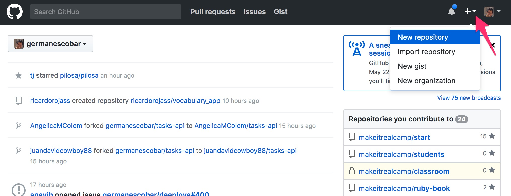

Full Stack con RoR Avanzado - Medellín Simón Escobar
El objetivo de estas 9 semanas es que aprendas a construir aplicaciones Web con Ruby on Rails.
La primera semana empezaremos con una introducción a las herramientas que vamos a utilizar: el editor de texto, la línea de comandos, Git y Github. Y después aprenderás la sintaxis de Ruby, que es un lenguaje de programación enfocado en la productividad del programador.
La segunda semana aprenderás Programación Orientada por Objectos con Ruby.
Paralelamente, durantes las dos primeras semanas deberás avanzar en la plataforma de aprendizaje con los módulos de HTML y Bootstrap (si aún no has trabajado con ellos).
En la tercera semana iniciamos con Sinatra, una librería de Ruby para hacer aplicaciones Web que te va permitir aprender el protocolo HTTP (Hypertext Transfer Protocol) muy bien. HTTP que es el protocolo más importante que debe conocer un programador Web.
La cuarta y quinta semana, después de una breve introducción a Bases de Datos, aprenderás a crear aplicaciones Web básicas con Ruby on Rails, el framework más popular de Ruby para hacer aplicaciones Web.
La sexta semana nos concentraremos en JavaScript, un lenguaje de programación que tiene varios detalles que lo pueden volver muy complejo de mantener.
La séptima semana repasaremos jQuery y AJAX.
La octava y novena semana volveremos a Ruby on Rails y veremos temas más complejos como testing y creación de API's.
Las dos herramientas principales que necesitas son: un editor de texto y la línea de comandos.
El editor de texto
Ejemplos de editores de texto incluyen Sublime Text, Notepad++, Atom, VSCode y Brackets entre muchos otros. Nuestra recomendación es Atom (aunque tu instructor puede sugerirte otro de su elección).

Los desarrolladores en Ruby generalmente no utilizamos un IDE (Integrated Development Environment) aunque existe uno muy famoso llamado RubyMine.
La ventaja de usar un IDE es que trae varias herramientas integradas que te permiten ejecutar la aplicación, hacerle debugging, correr las pruebas, hacer refactor, etc. sin necesidad de instalar nada adicional. La desventaja es que están diseñados para un lenguaje específico y generalmente son muy pesados en memoria.
Por otro lado, a los editores de texto les puedes instalar plugins para "engallarlos". Existen plugins para todo tipo de tareas e incluso uno mismo puede escribir un plugin si es necesario.
La línea de comandos
La línea de comandos (también conocida como consola, terminal o símbolo del sistema) es un aplicación que nos permite escribir y ejecutar comandos sobre el sistema operativo sin necesidad de usar el mouse. (A los comandos también se les llama aplicaciones de la línea de comandos).
Nota: Si estás en Windows te recomendamos usar PowerShell, que ya viene instalado en las últimas versiones. Algunos estudiantes logran realizar todo el curso con Windows, aunque la mayoría prefiere instalar Linux en una partición o una máquina virtual.
Algunos ejemplos de comandos que nos permiten navegar y manipular archivos y carpetas del sistema operativo son:
pwdnos permite conocer la carpeta donde estamos ubicados.cdseguido de una ruta relativa o absoluta nos permite navegar entre carpetas. Utilizacd ..para devolverte de carpeta.mkdirnos permite crear una carpeta.lslista las carpetas y archivos.mvmueve una carpeta u archivo a otra ubicación.cpcopia una carpeta u archivo a otra ubicación.rmeliminar una carpeta o archivo.
Git es un sistema de control de versiones distribuido. En general, un sistema de control de versiones tiene dos objetivos principales:
- Guardar el historial de cambios sobre el código de un proyecto.
- Permitir a varias personas contribuir simultáneamente sobre el mismo proyecto.
Git es una aplicación de la línea de comandos que nos va a permitir realizar las operaciones necesarias para lograr los dos objetivos que acabamos de mencionar.
Puedes instalar Git siguiendo las instrucciones de este enlace.
Conceptos
Commit: es una fotografía de tu proyecto, como si copiaras la carpeta y le pusieras un nombre con la fecha, hora y una descripción de los cambios desde el último commit. Cada commit está encadenado a uno anterior (exceptuando el primero) y de esa forma se va creando el historial de tu proyecto.
Repositorio: así se le llama a la carpeta que contiene los archivos con todo el historial de tu proyecto. Git utiliza una carpeta oculta llamada
.git.El espacio de trabajo (workspace): los archivos que estamos manipulando en este momento (los que vemos en la carpeta de nuestro proyecto).
Ramas (branches): las ramas son líneas independientes de nuestro repositorio, como las ramas de un árbol. La rama principal se llama
master.Etiquetas (tags): una etiqueta es un nombre que se le asocia a un commit, se utilizan para marcar lanzamientos (versiones) de nuestra aplicación.
Comandos
Los comandos principales de Git son los siguientes:
git config --global user.name <name>: define el nombre que se va a utilizar en los commits de forma global (para el usuario actual).git config --global user.email <email>: define el email que se va a utilizar en los commits de forma global (para el usuario actual).git init: este comando inicializa el repositorio (esto va a crear una carpeta oculta.giten la carpeta donde ejecutes este comando).git add .: agrega todos los cambios al index (el index contiene los cambios que se van a incluir en el siguiente commit). Si solo quieres incluir los cambios de un archivo puedes utilizargit add <nombre_archivo>git status: muestra la lista de archivos con cambios desde el último commit y los que van a ser incluídos en el siguiente commit (los que están en el index).git commit -m <descripción de los cambios>: crea un commit a partir de los cambios que están en el index con el mensaje que se le pase a la opción-m.git log: muestra el historial de commits de la rama actual.git checkout -b <nombre_rama>: crea una rama y se ubica sobre esa rama. Utilizagit statuspara conocer la rama en la que te encuentras ubicado(a).git branchmuestra una lista de las ramas.git checkout <nombre_rama>: se ubica en una rama ya existente. Si la rama no existe sale un error.git merge <nombre_rama>: se utiliza para mezclar los cambios de una rama en otra.
También te recomendamos leer este post del blog de Make it Real.
Github
Github es un servicio que nos brinda la posibilidad de crear un repositorio remoto (una réplica de nuestro repositorio local) en el que varios desarrolladores pueden colaborar, con herramientas que facilitan esa colaboración.
Github es gratis para proyectos Open Source, pero si quieres tener repositorios privados debes pagar una mensualidad (los planes empiezan en 7 dólares al mes).
Si aún no tienes una cuenta en Github es hora de crear una antes de continuar.
Una vez que hayas creado tu cuenta, para crear un repositorio en Github haz click sobre la opción "New Repository" como se muestra en la siguiente imagen:

En la siguiente pantalla debes darle un nombre al repositorio, asegurarte que esté público y oprimir el botón "Create repository":
Por último te va a aparecer una pantalla como la que ves a continuación. Copia y pega en la línea de comandos las líneas que se indican con la flecha roja:
La primera línea configura el repositorio remoto en tu repositorio local. Esta línea sólo la debes ejecutar una vez por repositorio remoto.
Puedes tener varios repositorios remotos y a cada uno le debes dar un nombre. En este caso lo estamos llamando origin.
La segunda línea es la que está empujando los commits que ya has creado localmente al repositorio remoto. Esta línea la debes ejecutar cada vez que haces nuevos commits (los commits no se envían al repositorio remoto de forma automática).
Para actualizar tu repositorio con los commits que otros desarrolladores han empujado utiliza git pull.
Haciendo fork de un proyecto
Todos los proyectos públicos en Github tienen un botón Fork que te permiten hacer una copia de ese proyecto a tu usuario de Github.
Existen varias razones por las que uno quisiera hacer un fork, entre las principales están continuar con el desarrollo de un proyecto que se encuentra estancado (el autor del proyecto no lo ha seguido manteniendo), para hacer modificaciones propias al proyecto o para colaborar a un proyecto al que no tenemos acceso.
Clonando un proyecto
Para "descargar" cualquier repositorio de Github a tu máquina utiliza el comando git clone. Esto va a crear una copia completa del repositorio en tu máquina.
Para verificar si tienes Ruby instalado abre una línea de comandos y ejecuta ruby -v. Si ya lo tienes te va a aparecer una línea similar a la siguiente:
$ ruby -v
ruby 2.3.0p0 (2015-12-25 revision 53290) [x86_64-darwin13]
La versión puede ser diferente, cualquier versión mayor a 2.1.0 está bien.
Si ves un mensaje diciendo que el comando no fue encontrado, significa que aún no tienes Ruby instalado. Puedes encontrar las instrucciones para instalarlo en el siguiente enlace: https://github.com/makeitrealcamp/ruby-installation.
Una vez que tengas instalado Ruby y lo hayas verificado, continúa. En las siguientes secciones vamos a ver cómo ejecutar código Ruby en el interpretador y desde un archivo.
IRB
Existen dos formas de ejecutar código Ruby. La primera es abrir el interpretador de Ruby ejecutando el comando IRB.
$ irb
2.3.0 :001 >
El interpretador nos permite escribir cualquier expresión válida de Ruby y oprimir Enter. El interpretador evalúa la expresión y debajo muestra el resultado:
$ irb
2.3.0 :001 > 1 + 2
=> 3
2.3.0 :002 >
Puedes repetir ese mismo proceso las veces que quieras. Esa es una forma muy rápida de probar código. Para salir escribe exit y oprime Enter.
Nuestro primer programa
La otra forma de ejecutar código Ruby es crear un archivo con extensión rb
en el que escribimos nuestro código. Para eso crea una carpeta en tu
máquina y úbicate sobre ella en la consola. Ábrela con tu editor
preferido.
Crea un archivo llamado hello_world.rb (los archivos de Ruby terminan con la extensión rb
y se recomienda nombrar el archivo todo en minúscula separando las
palabras con raya al piso). En el archivo escribe lo siguiente:
puts "Hola mundo"
Guárdalo. Para ejecutarlo escribe lo siguiente en la consola (asegúrate de estar sobre la carpeta donde está el archivo):
$ ruby hello_world.rb
Hola mundo
Deberías ver la cadena de texto "Hola mundo" en la consola. Cambia el texto por cualquier otro y vuelve a ejecutar el archivo.
¡Felicitaciones, has creado tu primer programa en Ruby!
Errores
Veamos ahora qué pasa si cometemos algún error en nuestro código. Por ejemplo, borra el caracter u de la palabra puts:
pts "Hola Mundo"
Vuelve a ejecutar el archivo con ruby hello_world.rb. Te debería aparecer el siguiente mensaje de error:
$ ruby hello_world.rb
hello_world.rb:1:in `<main>`: undefined method `pts` for main:Object (NoMethodError)
Did you mean? puts
El mensaje nos dice que el error ocurrió en el archivo hello_world.rb en la línea 1, y que no se encuentra el método pts. Además nos da una sugerencia (correcta en este caso) preguntándonos si nos estábamos refiriendo al método puts.
Hay veces que es fácil encontrar los errores, otras veces no es tan fácil. Lo que si es cierto es que a medida que vayas trabajando con el lenguaje vas a ir desarrollando una intuición que te va a permitir solucionar los errores más fácilmente, pero al principio es un proceso lento que es parte de ese aprendizaje.
Cometamos otro error intencionalmente para ver un mensaje diferente. Vuelve a escribir puts correctamente, pero ahora borra la comilla al final de esa línea:
puts "Hola Mundo
Vuelve a ejecutar el archivo. Debería salir un mensaje como el siguiente:
$ ruby hello_world.rb
hello_world.rb:1: unterminated string meets end of file
Esta vez nos dice que hay una cadena de texto que no está terminada y se encuentra con el final del archivo, o se alarga hasta el final del archivo.
Comentarios
Los comentarios se utilizan para documentar o aclarar nuestro código. Para agregar un comentario se utiliza el caracter #:
# este es un comentario
puts "Hola mundo"
puts "Esto está muy bacano" # este es otro comentario
Variables
Ruby es un lenguaje dinámico así que no es necesario definir el tipo de cada variable:
name = "Pedro"
puts "Hola #{name}"
El nombre de una variable debe comenzar con $, _ o una letra, y después puede contener letras, dígitos, _ y $.
Aunque en Ruby no defines el tipo de la variable, eso no significa que las variables no tengan un tipo, lo que pasa es que Ruby infiere automáticamente el tipo de la variable.
Ruby no convierte los tipos automáticamente. Si intentamos sumar un número a un string, falla:
$ irb
2.3.0 :001 > "Hola" + 5
TypeError: no implicit conversion of Fixnum into String
from (irb):1:in `+'
from (irb):1
from /Users/germanescobar/.rvm/rubies/ruby-2.3.0/bin/irb:11:in `<main>'
Para que esto funcione tenemos que convertir explícitamente el número a un string:
$ irb
2.3.0 :001 > "Hola" + 5.to_s
=> "Hola5"
La razón por la que podemos llamar un método sobre 5 es que en Ruby todo es un objeto. Pero no nos adelantemos.
Entrada del usuario
A través de la consola es posible pedirle al usuario que ingrese uno o
varios valores que podemos utilizar en nuestros programas. Para esto
crea un archivo llamado input.rb y agrega lo siguiente:
print "Ingresa tu nombre: "
name = gets.chomp
puts name
Cadenas de texto
Una cadena de texto es un conjunto de caracteres encerrados entre comillas simples (') o dobles ("). Por ejemplo:
"Texto entre comillas dobles"
'Texto entre comillas simples'
Números
Los números en Ruby funcionan muy similar a como funcionan en otros lenguajes de programación y puedes realizar las operaciones normales sobre ellos como sumas, restas, etc. Por ejemplo:
puts 1 + 2
puts 3 * 4 + 5
puts 8 / 2
Expresiones booleanas
En Ruby se utilizan las expresiones true y false para representar verdadero y falso respectivamente.
Los operadores lógicos <, >, <=, >=, ==, != se utilizan para crear expresiones que evalúan a un valor booleano true o false.
nil
En la mayoría de lenguajes existe una forma de representar valores nulos. En Ruby se utiliza el valor nil.
Concatenando cadenas
Es posible unir cadenas de texto con el operador +. Por ejemplo, abre IRB y ejecuta lo siguiente:
"Hola" + "Mundo" + "Cómo" + "Estás"
Deberías ver algo como esto:
$ irb
> "Hola" + "Mundo" + "Cómo" + "Estás"
=> "HolaMundoCómoEstás"
Fíjate que las palabras no se separan con espacio automáticamente, tenemos que agregar los espacios explícitamente:
$ irb
> "Hola " + "Mundo " + "Cómo " + "Estás"
=> "Hola Mundo Cómo Estás"
Concatenando valores de diferentes tipos
Si intentas concatenar una cadena con un número vas a ver el siguiente error:
$ irb
> "Hola" + 3
TypeError: no implicit conversion of Fixnum into String
from (irb):1:in `+'
from (irb):1
from /Users/germanescobar/.rvm/rubies/ruby-2.3.0/bin/irb:11:in `<main>'
El error nos dice que no es posible convertir un Fixnum (un número) a un String (a una cadena de texto). Una solución a este problema es convertir explícitamente el número a una cadena añadiendo .to_s a la derecha del número:
$ irb
> "Hola" + 3.to_s
=> "Hola3"
Ahora intenta lo siguiente, queremos que imprima "2 + 3 es 5":
$ irb
> "2 + 3 es " + 2 + 3
TypeError: no implicit conversion of Fixnum into String
from (irb):6:in `+'
from (irb):6
from /Users/germanescobar/.rvm/rubies/ruby-2.3.0/bin/irb:11:in `<main>'
¿Qué pasa si le añadimos .to_s a cada número? Veamos:
$ irb
> "2 + 3 es " + 2.to_s + 3.to_s
=> "2 + 3 es 23"
No es el resultado que esperábamos. Lo que hizo Ruby fue concatenar la cadena "2 + 3 es " con las cadenas "2" y "3".
Una solución es envolver la suma entre paréntesis y agregarle .to_s:
$ irb
> "2 + 3 es " + (2 + 3).to_s
=> "2 + 3 es 5"
Pero estar convirtiendo los tipos a cadena de texto con .to_s es muy engorroso. Ruby nos ofrece una mejor solución, la interpolación:
Interpolación
La interpolación es la forma recomendada de concatenar cadenas en Ruby. Abre IRB e intenta lo siguiente:
$ irb
> "Hola #{4}"
=> "Hola 4"
La interpolación nos permite ejecutar código Ruby dentro de una cadena de texto, convertir el resultado a una cadena de texto y reemplazarlo en donde se definió. Por ejemplo:
$ irb
> "2 + 3 es #{2 + 3}"
=> "2 + 3 es 5"
Para usar interpolación ten en cuenta lo siguiente:
- Debes usar comillas dobles (
") en vez de sencillas ('). Si utilizas comillas sencillas Ruby ignora la interpolación:
$ irb
> '2 + 3 es #{2 + 3}'
=> "2 + 3 es #{2 + 3}"
- La sintaxis de la interpolación es
#{}. Ruby evalúa lo que esté entre los corchetes y lo convierte en cadena de texto. - Puedes usar
#{}las veces que quieras dentro de una cadena.
Los condicionales le permiten a nuestros programas tomar decisiones cuando se están ejecutando.
Ruby ofrece varias formas para crear condicionales. La sintaxis más simple es la siguiente:
if <condición>
# código que se ejecuta si se cumple la condición
end
Else
if <condición>
# código que se ejecuta si se cumple la condición
else
# código que se ejecuta si no se cumple la condición
end
Elsif
if <condición 1>
# código que se ejecuta si se cumple la condición 1
elsif <condición 2>
# código que se ejecuta si no se cumple la condición 1, pero si la 2
elsif <condición 3>
# código que se ejecuta si no se cumplen las condiciones 1 y 2, pero si la 3
else
# código que se ejecuta si no se cumple ninguna de las otras condiciones
end
Puedes tener tantos elsif como sean necesarios.
Recuerda que en los condicionales el código solo entra por alguna de las ramas (al if, elsif o else), por ninguna razón va a entrar a más de una.
Unless
Ruby viene con una variación del if, el unless, que se utiliza cuando tenemos que negar el if. Por ejemplo, en vez de:
if !is_raining
# código que se ejecuta si no está lloviendo
end
unless is_raining
# código que se ejecuta si no está lloviendo
end
Condicionales en la misma línea
En Ruby es posible definir el if o el unless al final de una expresión, que sólo se va a ejecutar si se cumple la condición:
puts "saca la sombrilla" if is_raining
puts "no necesitas sombrilla" unless is_raining
En este caso va a imprimir "saca" la sombrilla si if_raining es true y "no necesitas sombrilla" si if_raining es false.
Operador ternario
Al igual que en otros lenguajes de programación, en Ruby existe el operador ternario, que te permite crear un if con else en la misma línea:
x = 10
puts x > 10 ? "Es mayor a 10" : "Es menor a 10"
El operador ternario tiene la siguiente sintaxis:
<condición> ? <si se cumple la condición> : <si no se cumple>
Valores verdaderos y falsos
En Ruby la condición de un if o un unless debe evaluar a verdadero o falso, pero no específicamente a true o false, existen algunos valores que evalúan a verdadero o falso que no necesariamente no son true o false:
nilevalúa afalse- un número evalúa a
true(así sea un número negativo) - una cadena evalúa a
true(así sea la cadena vacía)
Conclusión: En Ruby todo evalúa verdadero excepto false y nil.
Condicionales compuestas
num = 15
if num >= 10
if num <= 20
puts "El número está entre 10 y 20"
end
end
Operadores lógicos
En Ruby, al igual que en otros lenguajes de programación existen los operadores && (y), || (o) y ! (negación).
num = 15
if num >= 10 && num <= 20
puts "El número está entre 10 y 20"
end
color = gets.chomp
if color == "negro" || color == "blanco"
puts "Excelente elección"
end
Los ciclos nos permiten repetir la ejecución de un código varias veces.
En Ruby existen varias formas de hacer ciclos. Veamos algunas:
while
while <condición>
# acá va el código que se va a repetir mientras la condición sea verdadera
end
times (iterando N veces)
850.times do |i|
# código que se quiere ejecutar 850 veces.
end
Existe una sintaxis equivalente que nos permite ejecutar lo mismo en una sola línea:
850.times { |i| puts "Hola #{i}" }
each
(10..15).each do |i|
puts "#{i} Hola mundo"
end
La forma de crear un rango es con dos o tres puntos seguidos (.. o ...) entre dos números. La diferencia es que los dos puntos (..) incluyen el último valor, los tres puntos (...) lo excluyen.
Un arreglo es una lista ordenada de elementos de cualquier tipo. Para crear tu primer arreglo abre IRB y escribe lo siguiente:
array = [1, "Pedro", true, false, "Juan"]
La sintaxis de un arreglo es muy simple. Los elementos del arreglo se envuelven entre corchetes y se separan con coma. Fíjate que el arreglo que creamos contiene números, cadenas de texto y booleanos. Cada elemento del arreglo puede ser de cualquier tipo (incluso otros arreglos!).
Obteniendo la longitud de un arreglo
Para obtener la longitud del arreglo utilizas .length o .size:
[1, 2, 3, 4, 5, 6].length # => devuelve 6
[].size # => devuelve 0
Obteniendo los elementos de un arreglo
Para obtener la primera posición del arreglo que acabamos de crear utilizas array[0].
Para obtener la posición n del arreglo utilizas la array[n].
Si intentas obtener la posición en un índice que no existe recibes un nil.
En Ruby puedes utilizar índices negativos: -1 devuelve el último elemento, -2 penúltimo, y así sucesivamente.
Utilizando rangos
Para obtener una porción del arreglo puedes utilizar rangos. Por ejemplo:
array = [1, 2, 3, 4, 5, 6]
array[1..3] # => devuelve [2, 3, 4]
array[1...3] # => devuelve [2, 3]
Recorriendo un arreglo
array = [1, "Pedro", true, false, "Juan"]
array.each do |element|
puts element
end
Si necesitamos el índice de cada elemento podemos utilizar el método each_with_index en vez de each:
array = [1, "Pedro", true, false, "Juan"]
array.each_with_index do |element, index|
puts "#{index}: #{element}"
end
Reemplazando un elemento
array = [1, "Pedro", true, false, "Juan"]
array[1] = "Germán" # reemplazamos el elemento en la posición 1
Insertando nuevos elementos
Es posible insertar nuevos elementos en un arreglo (puede estar vacío o tener elementos). Por ejemplo:
array = ["Pedro"]
array.push("Germán") # ["Pedro", "Germán"]
array << "Diana" # ["Pedro", "Germán", "Diana"]
Tanto el método push como el operador <<
nos permiten agregar un elemento al final de la lista. ¿Qué pasa si
queremos agregar un elemento en otra posición? Para eso sirve el método insert:
array = ["Pedro", "Germán", "Diana"]
array.insert(0, "Juan") # ["Juan", "Pedro", "Germán", "Diana"]
El método insert recibe 2 argumentos: la posición en la
que se quiere insertar el elemento y el valor del nuevo elemento. Todos
los elementos desde esa posición se mueven a la derecha.
Eliminando elementos
Para eliminar elementos de un arreglo utiliza delete_at:
array = ["Pedro", "Germán", "Diana"]
array.delete_at(1) # ["Pedro", "Diana"]
Métodos útiles
Ya hemos visto métodos como push para insertar, each para recorrer, delete_at para eliminar y sample para seleccionar un elemento de forma aleatoria en los arreglos. Otros métodos útiles son:
| Método | Descripción |
|---|---|
| first | Retorna el primer elemento del arreglo |
| last | Retorna el último elemento del arreglo |
| shuffle | Retorna un nuevo arrego mezclado aleatoriamente |
| length | Retorna el tamaño del arreglo |
Puedes ver todos los métodos en la documentación de Array.
Métodos con exclamación al final
En la documentación de Ruby vas a encontrar algunos métodos que terminan con un signo de exclamación al final como shuffle! y reverse!.
Esos métodos se deben utilizar con cuidado porque modifican el arreglo
original. Generalmente estos métodos tienen otra versión sin signo de
exclamación que retornan un nuevo arreglo sin modificar el original
(p.e. shuffle y reverse).
En general intenta utilizar los métodos que no tienen el signo de exclamación al final a menos de que sea necesario modificar el arreglo original.
Por ejemplo, si quieres mezclar los lementos de un arreglo puedes hacerlo de dos formas:
array = [1, 2, 3, 4, 5]
array.shuffle! # modifica el arreglo original, no es necesario asignarlo a otra variable
another_array = array.suffle # no modifica el arreglo original, es necesario asignarlo a otra variable
Argumentos de un programa
Hasta ahora hemos solicitado información del usuario utilizando gets.chomp. Sin embargo, existe otra forma en que el usuario nos puede pasar información y es a través de los argumentos del programa.
Cuando ejecutamos un programa podemos pasarle varios argumentos separados por espacio. por ejemplo:
$ ruby program.rb argumento1 argumento2 argumento3
Podemos acceder a estos argumentos a través de una variable llamada ARGV (que es un arreglo). Para probarlo crea un archivo llamado args.rb y escribe lo siguiente:
ARGV.each do |arg|
puts arg
end
Para reforzar estos conceptos te compartimos el siguiente video: https://youtu.be/LH8FnTi0wQo
Un hash no es más que una colección de datos en donde cada valor está asociado a una llave. Imagina un diccionario, en donde las palabras son las llaves y las definiciones son los valores.
persona = {"nombre" => "Germán", "apellido" => "Escobar", "edad" => 34, "estatura" => 1.8}
En este ejemplo estamos creando un hash y almacenándolo en la variable persona. Un hash se define utilizando corchetes ({}). Los elementos se separan con coma (,) y las llaves se separan de los valores con hash rocket (=>).
Obteniendo valores de un hash
Para obtener el nombre de la persona en el hash que definimos previamente utilizamos la siguiente línea de código:
2.3.1 :002 > persona["nombre"]
=> "Germán"
Para obtener el valor de una llave en un hash utilizamos una notación
muy similar a como lo hacemos con los arreglos, utilizando [].
Sin embargo, en vez de utilizar la posición como en los arreglos,
utilizamos la llave. Las llaves pueden ser de cualquier tipo. En el
ejemplo anterior utilizamos strings pero también podrían ser números:
2.3.1 :003 > statuses = {0 => "encendido", 1 => "apagado", 2 => "fundido"}
=> {0 => "encendido", 1 => "apagado", 2 => "fundido"}
Y para obtener el valor de la llave 1 hacemos lo siguiente:
2.3.1 :004 > statuses[1]
=> "apagado"
Agregando nuevos elementos al hash
Podemos agregar más elementos al hash. Por ejemplo, si quisiéramos agregar una llave peso en el hash que definimos anteriormente, lo haríamos de la siguiente forma:
2.3.1 :005 > persona["peso"] = 65
=> 65
Si volvemos a mostrar el contenido de la variable persona veríamos el siguiente resultado (fíjate que ahora tiene una nueva llave "peso" con valor 65):
2.3.1 :006 > persona
=> {"nombre"=>"Germán", "apellido"=>"Escobar", "edad"=>34, "estatura"=>1.8, "peso"=>65}
Modificando elementos del hash
Es posible modificar los elementos de un hash. Por ejemplo, si queremos cambiar el valor de la llave peso podríamos hacer lo siguiente:
2.3.1 :007 > persona["peso"] = 70
=> 70
Ahora, si volvemos a mostrar el contenido de la variable persona veríamos el siguiente resultado (fíjate que ahora la llave "peso" tiene un valor de 70):
2.3.1 :008 > persona
=> {"nombre"=>"Germán", "apellido"=>"Escobar", "edad"=>34, "estatura"=>1.8, "peso"=>70}
Eliminando elementos del hash
Para eliminar una llave (con su respectivo valor) del hash podemos utilizar el método delete. Por ejemplo, si queremos eliminar la llave "peso" podemos hacer lo siguiente:
2.3.1 :009 > persona.delete("peso")
=> 70
El método delete devuelve el valor de la llave eliminada. Ahora, si volvemos a mostrar el contenido de la variable person veríamos el siguiente resultado (fíjate que no está la llave "peso"):
2.3.1 :010 > persona
=> {"nombre"=>"Germán", "apellido"=>"Escobar", "edad"=>34, "estatura"=>1.8}
Recorriendo los elementos de un hash
Hay varias formas de recorrer los elementos de un hash. Primero, podemos utilizar el método each de la siguiente forma. Crea un archivo llamado hashes.rb con el siguiente código:
persona = { "nombre" => "Germán", "apellido" => "Escobar", "edad" => 34, "estatura" => 1.8 }
persona.each do |llave, valor|
puts "#{llave}: #{valor}"
end
Usando símbolos como llaves
En los ejemplos anteriores hemos usado cadenas de texto y números como llaves de los hashes. Sin embargo, en Ruby hay un tipo de datos que es muy utilizado como llaves en los hashes: los símbolos.
status = :encendido # nuestro primer símbolo
Los símbolos son muy parecidos a las cadenas de texto pero con las siguientes diferencias:
- No están envueltos en comillas.
- Empiezan con dos puntos (:).
- No contienen espacios en blanco.
Creemos nuestro primer hash con símbolos:
$ irb
2.3.1 :001 > persona = {:nombre => "Germán", :apellido => "Escobar", :edad => 34, :estatura => 1.8}
Muy parecido al ejemplo anterior. Pero entonces ¿cuál es la ventaja de usar símbolos como llaves de un hash? La respuesta es que cuando usamos símbolos podemos escribir los hashes de forma más corta:
2.3.1 :002 > persona = {nombre: "Germán", apellido: "Escobar", edad: 34, estatura: 1.8}
Los cambios que hicimos son los siguientes:
- Eliminamos el
=>(hash rocket) - Movimos los dos puntos (:) al final del símbolo.
Para obtener algún valor del hash utilizamos el símbolo:
2.3.1 :003 > persona[:nombre]
=> "Germán"
Otros métodos útiles
Ya hemos visto cómo definir un hash, y cómo insertar, obtener, eliminar y recorrer elementos de un hash. Otros métodos útiles incluyen:
| Método/Operador | Descripción |
|---|---|
length |
Retorna el número de elementos en el hash |
has_key? |
Retorna true si la llave existe |
keys |
Retorna un arreglo con las llaves |
values |
Retorna un arreglo con los valores |
Obteniendo la longitud de una cadena
str = "Hola mundo"
puts str.length
Recorrer cadenas
Puedes obtener los caracteres de una posición específica igual que con los arreglos. Por ejemplo, modifica el archivo para mostrar los primeros 4 caracteres:
str = "Hola mundo"
puts str[0]
puts str[1]
puts str[2]
puts str[3]
Para recorrer cada uno de los caracteres de una cadena puedes hacer lo siguiente:
str = "Hola mundo"
chars = str.chars # ["H", "o", "l", "a", " ", "m", "u", "n", "d", "o"]
chars.each do |c|
puts c
end
Partiendo cadenas
No siempre queremos crear un arreglo a partir de sus caracteres. En
ocasiones es útil dividir una cadena por otro caracter como espacio o
coma. Para eso podemos utilizar el método split. Abre IRB y ejecuta lo siguiente:
$ irb
2.3.1 :001 > "Hola mundo".split(" ")
=> ["Hola", "mundo"]
El método split recibe el caracter por el que quieres partir la cadena. Por ejemplo, podemos partir una cadena por comas:
$ irb
2.3.1 :001 > "prueba,separar,cadenas".split(",")
=> ["prueba", "separar", "cadenas"]
Si quieres unir un arreglo en una cadena puedes utilizar el método join:
$ irb
2.3.1 :001 > ["Hola", "mundo"].join(" ")
=> "Hola mundo"
El método join recibe un argumento que es el caracter
que se va a utilizar para separar los elementos. Por ejemplo, podemos
unir un arreglo con guiones:
$ irb
2.3.1 :001 > ["Hola", "mundo"].join("-")
=> "Hola-mundo"
Otros métodos útiles
Sobre las cadenas de texto podemos llamar una gran cantidad de métodos y operadores interesantes. Veamos algunos de ellos:
| Método/Operador | Descripción | Ejemplo |
|---|---|---|
* |
Permite repetir la cadena n veces |
"a" * 5 # aaaaa |
<< |
Permite concatenar la cadena con otra cadena | "a" << "b" # ab |
capitalize |
Capitaliza una cadena | "hola mundo".capitalize # Hola mundo |
upcase |
Cambia a mayúsculas | "Hola".upcase # HOLA |
downcase |
Cambia a minúsculas | "HoLa".downcase # hola |
empty? |
Returna true si la cadena está vacía | "".empty? # true |
gsub |
Reemplaza las ocurrencias en el texto | "Hola mundo".gsub("mundo", "Germán") # Hola Germán |
Prueba cada uno de los ejemplos en IRB. Puedes encontrar todos los métodos de las cadenas en la documentación de Ruby
Los métodos, conocidos también como funciones o procedimientos en otros lenguajes, nos permiten reutilizar código.
La sintaxis para crear un método en Ruby es la siguiente:
def hello
puts "Hola mundo"
end
Para definir un método usamos la palabra reservada def y le damos un nombre (en este caso hello). Al final debemos cerrar el método con end.
Para invocar un método, utilizas el nombre del método y, opcionalmente, abres y cierras paréntesis al final:
hello() # los paréntesis son opcionales
Parámetros
Los métodos pueden recibir cero o más parámetros (o argumentos). Modifiquemos nuestro programa para que salude a cualquier persona:
def hello(name)
puts "Hola #{name}"
end
hello("Germán")
hello("David")
Retornando un valor
En Ruby todas las expresiones retornan un valor. Incluso puts "Hola mundo" retorna un valor, solo que el valor es nil.
Por defecto, todos los métodos retornan el resultado de la última línea que se ejecute en el método. Vamos a modificar nuestro ejemplo para que en vez de imprimir el saludo, lo retorne:
def hello(name)
"Hola #{name}"
end
puts hello("Germán")
puts hello "David" # los paréntesis son opcionales
También es posible retornar el valor explícitamente con la palabra reservada return:
def hello(name)
return "Hola #{name}"
end
puts hello("Germán")
puts hello "David"
La manipulación de archivos en Ruby es relativamente fácil a comparación de otros lenguajes. Sin embargo, existen varias formas de hacer lo mismo, así que veremos las más comunes.
Leer de un archivo
puts File.read("path/al/archivo")
Para obtener las líneas en un arreglo:
arr = IO.readlines(file_path)
Verificar si un archivo existe
if FIle.file?("path/al/archivo")
# código si el archivo existe
else
# código si el archivo no existe
end
Escribir a un archivo
File.write(file, content)
File.open('path/to/file', 'w') { |file| file.write("content") }
La Programación Orientada por Objetos (POO) te va a permitir escribir código más claro y fácil de mantener en el tiempo.
Los conceptos principales de la POO son las clases y los objetos.
Las clases son plantillas a partir de las cuáles se crean objetos.
Los objetos son instancias de una clase.
Sintaxis
La sintaxis que se utiliza para crear una clase es la siguiente:
class Person
end
Las clases siempre se nombran en mayúsculas utilizando CamelCase (cada palabra comienza con mayúscula).
La sintaxis para crear un objeto es la siguiente:
Person.new
Métodos
En las clases puedes definir métodos que después vas a poder invocar sobre los objetos:
class Person
def greet
"Hola"
end
end
Para utilizar el método primero debemos crear una instancia (objeto) de la clase:
p1 = Person.new
puts p1.greet # imprime "Hola"
puts p1.greet # imprime "Hola"
Métodos privados
Es posible crear métodos que sólo son visibles dentro de la clase. Para hacerlo debemos utilizar la palabra clave private. Todos los métodos que van debajo de esa palabra private son privados:
class Person
...
private
def secret_method
puts "Este es un método privado"
end
end
Constructor
Las clases pueden tener un método especial llamado initialize que se llama cada vez que se crea un objeto con .new:
class Person
def initialize
puts "creando nueva persona ..."
end
...
end
Person.new # imprime "creando nueva persona ..."
El constructor puede recibir argumentos:
class Person
def initialize(name)
puts "creando nueva persona llamada #{name}"
end
...
end
Person.new("Pedro") # imprime "creando nueva persona llamada Pedro"
Person.new("Juan") # imprime "creando nueva persona llamada Juan"
Atributos
Un objeto puede guardar información en atributos, variables que están asociadas a un objeto particular.
A los atributos también se les conoce como variables de instancia.
Los atributos se definen en la clase utilizando el caracter @ al principio. Veamos cómo se utiliza.
class Person
def initialize(name)
@name = name
end
def greet(other_person_name)
"Hola #{other_person_name}, me llamo #{@name}"
end
end
Visibilidad de los atributos
Por defecto, los atributos son privados, es decir, solo son visibles dentro de la clase. Si queremos exponerlos al mundo exterior tenemos que crear métodos para leerlos y modificarlos (a estos métodos se les conoce como getters y setters).
class Person
def initialize(name)
@name = name
end
def greet(other_person_name)
"Hola #{other_person_name}, me llamo #{@name}"
end
# Método para que @name pueda ser leído desde afuera
def name
@name
end
# Método para que @name pueda ser modificado desde afuera
def name=(name)
@name = name
end
end
El método para leer el atributo se debe llamar igual que el atributo y generalmente retorna el valor del atributo.
El método para escribir el atributo se debe llamar igual que el atributo pero con un = al final del atributo.
Ruby tiene un atajo para no tener que escribir siempre el getter y setter de todos los atributos, el attr_accessor. El siguiente código es equivalente al anterior:
class Person
attr_accessor :name
def initialize(name)
@name = name
end
def greet(other_person_name)
"Hola #{other_person_name}, me llamo #{@name}"
end
end
Si no quieres que el atributo pueda ser modificado utiliza attr_reader en vez de attr_accessor.
Si no quieres que el atributo pueda ser leído utiliza attr_writer en vez de attr_accessor.
En Ruby (casi) todo es un objeto
Cuando haces algo como "Hola".length estás llamando el método length de una clase llamada String. De hecho podemos ser más explícitos y crear la cadena de la siguiente forma:
$ irb
> s = String.new("Hola")
=> "Hola"
> s.length
=> 4
Cuando creas una cadena con comillas, Ruby lo traduce a String.new("..."). Lo mismo ocurre con los arreglos y los hashes, que se crean con las clases Array y Hash respectivamente.
Puedes consular la documentación de las clases String, Array y Hash para ver todos los métodos que puedes utilizar.
Los números también son objetos en Ruby y puedes llamar métodos sobre ellos:
$ irb
> 2.even?
=> true
De hecho, cuando sumas dos números en Ruby (p.e. 1 + 2) realmente estás llamando el método + sobre el primer número y le estás pasando el segundo número como argumento!
$ irb
> 1+(2)
=> 3
Para ver todos los métodos que tienen los números puedes consultar la documentación de Fixnum, la clase que representa números en Ruby (fíjate en todos los métodos que parecen operadores como +, =, etc.).
Conociendo la clase de un objeto
Todos los objetos tienen un método especial llamado class que retorna la clase que se utilizó para crearlos:
$ irb
> 2.class
=> Fixnum
> "Hola".class
=> "String"
self
Por último, es muy probable que veas la palabra clave self en las clases. Veamos para qué sirve con un ejemplo:
class Person
def initialize
random_number = self.random_number
end
def random_number
# generates random number
end
end
Con self podemos ser más explícitos para referirnos a un método del objeto. En este caso, estamos almacenando el resultado del método random_number en una variable random_number. Como tienen el mismo nombre utilizamos self para indicarle a Ruby que nos estamos refiriendo al método y no a la variable.
self se utiliza generalmente cuando hay colisiones de nombres entre un método y una variable.
Hasta ahora, los métodos y atributos de los que hemos hablado están asociados a un objeto. En este capítulo hablaremos sobre métodos y atributos que están asociados a la clase directamente.
Métodos de clase
Un método de clase es muy parecido a un método de instancia, con la diferencia de que el nombre tiene el prefijo self.:
class Person
def self.mi_metodo_de_clase
puts "Este es un método de clase"
end
end
Para invocar este método debes hacerlo directamente sobre la clase (fíjate que el prefijo self. se omite):
Person.mi_metodo_de_clase
Si intentas invocar el método sobre una instancia recibirás un error:
p1 = Person.new
p1.mi_metodo_de_clase # error
Atributos de clase
Supongamos que necesitamos contar cuántos objetos se crean a partir de la clase Person. Esa información la podríamos almacenar en un atributo de clase. Los atributos de clase se identifican porque utilizan dos @@ en vez de una:
class Person
@@people_count = 0
def initialize
@@people_count += 1
end
def self.people_count
@@people_count
end
end
En este ejemplo estamos inicializando nuestro atributo de clase @@people_count en 0. Cada vez que se cree un objeto de tipo Person se va a invocar el constructor initialize que incrementa @@people_count en 1.
Los atributos de clase no son visibles fuera de la clase. Es por eso que creamos un método de clase people_count que va a retornar @@people_count.
Probemos esta clase a ver si funciona:
puts Person.people_count # Imprime 0
Person.new
puts Person.people_count # Imprime 1
Person.new
puts Person.people_count # Imprime 2
La herencia es una forma de reutilizar código en la programación orientada a objetos. A través de herencia, una clase puede recibir los métodos de otra clase.
Para indicar que una clase hereda de otra se utiliza el operador < en la definición de la clase seguido del nombre de la clase que se quiere extender (heredar). Por ejemplo:
# Clase Padre
class Figure
attr_accessor: :stroke, :fill
end
# Hereda de Figure
class Circle < Figure
attr_accessor :radius
end
# Hereda de Figure
class Square < Figure
attr_accessor :side
...
end
# Hereda de Figure
class Triangle < Figure
attr_accessor :base, :height
end
En este caso Circle, Square y Triangle heredan de Figure, es decir, que tienen todos los métodos se definan en Figure (en este caso los métodos para leer y escribir stroke y fill). Por ejemplo:
c1 = Circle.new
c1.fill = "red"
puts c1.fill
Jerarquía de clases
Una clase puede ser padre de muchas otras clases, e hija de otra al mismo tiempo.
class Figure
...
end
class Circle < Figure
attr_accessor :radius
end
class Cylinder < Circle
attr_accessor :length
end
Circle es hija de Figure y padre de Cylinder. A medida que se van creando más clases se va creando una jerarquía de clases.
Object
En Ruby la clase Object es la clase padre de todas las clases que no hereden de alguna otra. Object define métodos como class, to_s, methods, respond_to?, nil?, is_a?, entre otros. Puedes ver la lista completa en la documentación de la clase Object. Todos estos métodos están disponibles en cualquier clase de Ruby.
Nota: Object extiende de otra clase llamada BasicObject, que es la raíz de toda la jerarquía de clases en Ruby, pero esa es una clase vacía, así que en la práctica puedes pensar en Object como la clase raíz.
Herencia y el constructor
Si quieres invocar el constructor del padre debes hacerlo explícitamente utilizando la palabra clave super:
class Parent
def initialize
puts "Este es el constructor de Parent"
end
end
class Child
def initialize
super # con esta línea ejecutamos el constructor del padre
end
end
La palabra super debe ser la primera línea dentro de initialize. Si aparece después de cualquier otra línea se genera un error.
Sobrescribiendo métodos
Es posible sobreescribir los métodos de la clase padre definiendo un
método que se llame igual en la clase hija. Por ejemplo, es muy común
sobrescribir el método to_s que está definido en Object:
class Circle < Figure
...
def to_s
"Este es un círculo con radio #{@radius}"
end
end
Nota: No es necesario que el método esté definido directamente en la clase padre, puede estar más arriba en la jerarquía como en este ejemplo.
Los módulos en Ruby cumplen una doble función: evitan colisiones de nombres y nos ayudan a reutilizar código.
Un módulo es un contenedor de clases, métodos y constantes. Los módulos se definen utilizando la palabra clave module. Creemos un módulo MyModule:
module MyModule
end
Dentro del módulo podemos definir clases, métodos y constantes. Por ejemplo:
module MyModule
MAX_CONNECTIONS = 5
def method_one
end
def method_two
end
class ThingOne
end
class ThingTwo
end
end
Para acceder a las clases y constantes escribes el nombre del módulo, seguido de :: (doble dos puntos), seguido del nombre de la clase o la constante. Por ejemplo:
puts MyModule::MAX_CONNECTIONS # Imprime 5
MyModule::ThingOne.new # Crea una instancia de la clase
A los métodos que están definidos en un módulo no los podemos acceder directamente, tenemos que mezclar el módulo dentro de una clase.
Mezclando el módulo
Los módulos se pueden incluir dentro de una clase utilizando la palabra clave include:
class Person
include MyModule
end
Esto va a incluir todos los métodos de MyModule dentro de Person, así que podemos llamar los métodos method_one y method_two (que definimos dentro del módulo MyModule en la sección anterior) sobre instancias de Person.
Otra ventaja de incluir (o mezclar) un módulo dentro de una clase es que podemos acceder a las clases y las constantes que están definidas dentro del módulo directamente:
class Person
include MyModule
def initialize
puts MAX_CONNECTIONS # no hay necesidad de agregar el prefijo MyModule::
ThingOne.new # no hay necesidad de agregar el prefijo MyModule::
end
end
Es posible mezclar más de un módulo en una clase. Por ejemplo, suponiendo que existen los módulos Module1 y Module2, podemos hacer lo siguiente:
class Person
include Module1
include Module2
end
Anidando módulos
Es posible anidar módulos dentro de módulos. Por ejemplo:
module System
module Currency
class Dollar
end
end
end
¿Cómo accedemos a la clase Dollar? De la siguiente forma:
System::Currency::Dollar.new
Las excepciones nos permiten interrumpir el flujo normal del programa para indicar que algo inesperado ha sucedido.
Seguramente ya has visto excepciones como SyntaxError que se dispara cuando tienes un error de sintaxis en el código o NoMethodError cuando intentas invocar un método que no existe.
Cuando se dispara una excepción el programa interrumpe el código y termina a menos de que alguien intercepte la excepción y la maneje.
Interceptando excepciones
begin
1 / 0 # esto lanza una excepción ZeroDivisionError
rescue
# este código se ejecuta cuando ocurre una excepción
end
Si queremos ver el mensaje y el stacktrace podemos asignar la excepción a una variable:
begin
1 / 0
rescue => e
puts e.message # imprime el mensaje
puts e.backtrace.join(`\n`) # imprime el stacktrace
end
Si queremos interceptar solo unas excepciones específicas debemos escribir el nombre de la clase:
begin
1 / 0
rescue ZeroDivisionError => e
# código que se ejecuta cuando ocurre un ZeroDivisionError
end
Lanzando excepciones
Para lanzar una excepción utiliza la palabra clave raise:
raise ArgumentError.new("El argumento es inválido")
Cuando se lanza una excepción debemos decidir qué excepción vamos a lanzar. ArgumentError se utiliza cuando existe un error en un argumento de un método. Otra más común es RuntimeError:
raise RuntimeError.new("No se esperaba que ...")
Otras formas equivalentes en las que puedes lanzar una excepción son:
raise RuntimeError, "No se esperaba que ..."
# lo siguiente genera un RuntimeError
raise "No se esperaba que ..."
Existen muchas más excepciones incluidas con Ruby y están organizadas en una jerarquía de clases. Veamos algunas de ellas:
Exception
NoMemoryError
ScriptError
LoadError
NotImplementedError
SyntaxError
SignalException
Interrupt
StandardError
ArgumentError
IOError
EOFError
IndexError
LocalJumpError
NameError
NoMethodError
RangeError
FloatDomainError
RegexpError
RuntimeError
SecurityError
SystemCallError
SystemStackError
ThreadError
TypeError
ZeroDivisionError
SystemExit
La jerarquía es importante porque cuando capturas, por ejemplo, StandardError, estás capturando cualquier excepción debajo en la jerarquía como ArgumentError, IOError, etc.
En general, uno debe ser lo más específico al capturar excepciones. Evita capturar Exception, es una mala práctica.
Cuando omites la excepción en el rescue realmente estás capturando StandardError (y por lo tanto, cualquier excepción que esté debajo en la jerarquía).
Creando nuestras propias excepciones
También es posible crear nuestras propias excepciones, simplemente crea una clase que extienda de StandardError:
class PermissionDeniedError < StandardError
end
raise PermissionDeniedError.new()
Como una excepción no es más que una clase normal de Ruby, puedes agregarle un constructor, atributos y métodos:
class PermissionDeniedError < StandardError
attr_reader :action
def initialize(message, action)
# Call the parent's constructor to set the message
super(message)
# Store the action in an instance variable
@action = action
end
end
# Cuando alguien trate de borrar algo sin permiso podrías
# hacer algo así:
raise PermissionDeniedError.new("Permission Denied", :delete)
A las librerías de Ruby se les conoce como gemas.
Las gemas te van a ayudar a escribir menos código.
El repositorio central de gemas es RubyGems. Existen gemas para hacer georeferenciación (p.e. geocoder), para manipular archivos de Excel (p.e. roo), para generar datos ficticios (p.e. faker), para hacer aplicaciones Web (p.e. sinatra), entre miles de gemas más que puedes utilizar en tus proyectos.
Para instalar una gema en tu sistema de forma global utiliza el comando gem install nombre_de_la_gema. Por ejemplo, instala la gema faker con el siguiente comando:
$ gem install faker
Para utilizar la gema debes requerirla, generalmente es el mismo nombre de la gema aunque hay casos en que no (por eso es buena idea siempre ver la documentación de la gema):
$ irb
> require 'faker'
=> true
> Faker::Name.name
=> "Conner Roberts"
Crear una gema
También puedes publicar tus propias gemas: http://guides.rubygems.org/make-your-own-gem/.
Utilizando Bundler
https://blog.makeitreal.camp/manejo-de-dependencias-en-ruby-con-bundler/
Para instalar Sinatra:
$ gem install sinatra
Si estás utilizando Bundler incluye la gema en el Gemfile:
gem "sinatra"
Después debes ejecutar:
$ bundle install
Crea un archivo app.rb (o como lo quieras nombrar) con el siguiente código:
require 'sinatra'
get '/' do
'Hello world!'
end
Y ejecútalo con:
$ ruby myapp.rb
Abre tu navegador en http://localhost:4567
Utilizando vistas
get '/' do
erb :index
end
La línea erb :index renderiza el archivo views/index.erb. Crea ese archivo con el siguiente contenido:
<!DOCTYPE html>
<html lang="en">
<head>
<meta charset="UTF-8">
<title>Hola Sinatra</title>
</head>
<body>
<h1>Mi primera aplicación Web con Sinatra!</h1>
</body>
</html>
Podemos mezclar código Ruby en el HTML utilizando <% y %>:
...
<% 100.times do %>
<h1>Mi primera aplicación Web con Sinatra!</h1>
<% end %>
...
Utilizando templates
Puedes utilizar un layout para no tener que repetir el mismo código en todos los archivos ERB. Crea un archivo views/layout.erb con el siguiente contenido:
<!DOCTYPE html>
<html lang="en">
<head>
<meta charset="UTF-8">
<title>Hola Sinatra</title>
</head>
<body>
<%= yield %>
</body>
</html>
Ahora modifica views/index.erb para que solo contenga lo que va dentro de <body>:
<% 100.times do %>
<h1>Mi primera aplicación Web con Sinatra!</h1>
<% end %>
Pasando información del controlador a la vista
Cuando defines una variable de instancia en la ruta, esa variable va a estar disponible en la vista. Por ejemplo:
get '/' do
@name = "Pedro"
erb :index
end
Y ahora podemos utilizar la variable @name en la vista:
<h1>Hola <%= @nombre %></h1>
Para imprimir información en pantalla desde el código Ruby utilizamos el igual cuando abrimos la etiqueta <%= y %>.
Atención: Si omites el = no va a aparecer nada en pantalla.
El protocolo HTTP (HyperText Transfer Protocol) es quizá el protocolo más importante que debe conocer un desarrollador Web.
El protocolo HTTP es un documento que define las reglas de los mensajes que se intercambian entre los navegadores (clientes) y los servidores. El documento completo lo puedes encontrar en http://www.rfc-base.org/txt/rfc-2068.txt.
HTTP es un protocolo cliente-servidor, lo que significa que el cliente envía una petición al servidor y espera un mensaje de respuesta.
Cuando abres el navegador e ingresas a cualquier URL los pasos que ocurren son los siguientes:
- El navegador abre una conexión con el servidor.
- El navegador envía un mensaje HTTP (a esto se le conoce como una petición).
- El servidor recibe el mensaje, lo interpreta siguiendo las reglas del protocolo y responde con otro mensaje (la respuesta) que puede ser el documento que se solicitó el usuario, o un error (p.e. que el recurso no existe).
- El navegador cierra la conexión.
Mensajes HTTP
Un mensaje HTTP (no importa si es de petición o respuesta) se compone de 3 partes:
- La primera línea (que es diferente para la petición y la respuesta).
- Encabezados.
- Una línea en blanco.
- El cuerpo (opcional)
Ejemplo de mensaje de petición
GET /index.html HTTP/1.1
Host: wikipedia.org
Accept: text/html
La primera línea se compone de un verbo (en este caso GET), una ruta a un recurso (en este caso /index.html) y la versión del protocolo (en este caso HTTP/1.1)
En este ejemplo tenemos dos encabezados: Host y Accept.
Este mensaje no tiene cuerpo.
Ejemplo de mensaje de respuesta
HTTP/1.1 200 OK
Server: wikipedia.org
Content-Type: text/html
Content-Lenght: 2026
<html>
…
</html>
Verbos
La primera línea de un mensaje HTTP de petición empieza con un verbo (también se le conoce como método). Los verbos definen la acción que se quiere realizar sobre el recurso. Los verbos más comunes son:
- GET: se utiliza para solicitar un recurso.
- POST: se utiliza para publicar un recurso.
- PUT: se utiliza para reemplazar un recurso.
- DELETE: se utiliza para eliminar un recurso.
Existen otros pero estos son los más comunes.
Códigos de respuesta
La primera línea de un mensaje de respuesta tiene un código de 3 dígitos que le indica al cliente cómo interpretar la respuesta.
Los códigos de respuesta se dividen en cinco categorías dependiendo del dígito con el que inician:
- 1XX: Información
- 2XX: Éxito
- 3XX: Redirección
- 4XX: Error en el cliente
- 5XX: Error en el servidor
Encabezados
Los encabezados brindan información adicional sobre la petición o la respuesta. Los encabezados tienen la siguiente sintaxis:
[nombre del encabezado]: [valor del encabezado]
URL
Un URL (Uniform Resource Locator) se utiliza para ubicar un recurso en Internet. Los URLs no solo se pueden utilizar para el protocolo HTTP, se utilizan en muchos otros protocolos.
La siguiente imagen muestra las partes de un URL utilizando dos ejemplos:
Esquema
El esquema define el protocolo a utilizar, para HTTP puede ser http o https (el protocolo seguro de HTTP).
Host
La IP o el nombre del servidor que se quiere acceder (p.e. 127.0.0.1, localhost, google.com, www.google.com.co, etc.)
Puerto
E puerto en el que está escuchando el servidor HTTP. Si se omite se asume que es el 80.
Path
Define la ruta del recurso que se quiere acceder.
Query String
Contiene información adicional para el servidor en forma de propiedades (atributo=valor). Las propiedades se separan por &.
Fragmento
La referencia a una ubicación interna del documento.
Recursos relacionados
- Ver el video de esta lección: https://youtu.be/K589vqhuMm8.
En Sinatra las rutas se definen utilizando el verbo (en minúscula) seguido del path y recibe un bloque de Ruby con el código que se quiere ejecutar cuando una petición coincide con el verbo y el path.
get '/' do
.. show something ..
end
post '/' do
.. create something ..
end
put '/' do
.. replace something ..
end
patch '/' do
.. modify something ..
end
delete '/' do
.. annihilate something ..
end
Desafortunadamente, desde los navegadores solo podemos realizar peticiones de tipo GET y POST (formularios).
Para realizar peticiones con PUT, PATCH, DELETE, etc. podemos utilizar curl, Postman o algún lenguaje de programación (como Ruby!).
La primera ruta que coincide con la petición es la que se ejecuta.
Las rutas que tienen un slash al final son diferentes de las que no lo tienen:
get '/foo' do
# No coincide con "GET /foo/"
end
Escribiendo el cuerpo, código de respuesta y los encabezados
Lo que retornes en cada ruta se va a convertir en el mensaje HTTP de respuesta. Puedes devolver:
- Un string que se va a convertir en el cuerpo de la respuesta.
- Un número con el código de respuesta (200, 404, etc.)
- Un arreglo con dos elementos: el código de respuesta y el cuerpo de la respuesta.
- Un arreglo con tres elementos: el código de respuesta, un hash con los encabezados y el cuerpo de la respuesta.
Si retornas sólo un string el código de respuesta es 200 OK.
También existen los métodos body, status y headers
que te permiten escribir el cuerpo, código de respuesta y los
encabezados respectivamente, pero lo que se recomienda es definir esta
información en lo que retorne el bloque.
El siguiente ejemplo:
get '/' do
[200, { "Content-Type" => "text/html" }, "Hola Mundo"]
end
Es equivalente a:
get '/' do
status 200
headers "Content-Type" => "text/html"
body "Hola Mundo"
end
Query string
El query string es el conjunto de propiedades que van después del signo de interrogación (?) de un URL. Sinatra automáticamente convierte las propiedades en el hash params.
Por ejemplo, si quieres obtener el valor de una propiedad llamada name utilizarías params[:name]:
get '/greet' do
"Hola #{params[:name]}"
end
Los valores siempre se retornan como cadenas de texto. Si esperas un número debes convertirlo manualmente. Por ejemplo:
get '/age-in-5-years' do
age = params[:age].to_i
"Tu edad en 5 años será: #{age + 5}"
end
Variables de path
Puedes utilizar variables en las rutas que puedes obtener a través del hash params:
get '/hello/:name' do
# coincide con "GET /hello/juan" and "GET /hello/pedro"
# params['name'] is 'juan' or 'pedro'
"Hello #{params['name']}!"
end
El objeto request
En tu código puedes utilizar el objeto request para acceder a toda la información de la petición HTTP:
request.url # retorna el URL completo
request.request_method # GET, POST, PUT, etc.
request.path # el path del URL
request.host # el host del URL
request.port # el port
request.scheme # http o https
request.query_string # todo lo que va después de ? en la URL
request.body # el cuerpo del mensaje (si tiene)
request.ip # la IP desde donde se hizo la petición
request.accept # el valor del encabezado Accept
request.user_agent # el valor del encabezado User-Agent
request.referrer # el valor del encabezado Referrer
request.content_type # el valor del encabezado Conten-Type
Nota: Si deseas obtener el valor de otro encabezado tienes que utilizar el objeto env, pasar el encabezado a mayúscula y agregarle el prefijo HTTP_. Por ejemplo:
env['HTTP_X_HEADER'] # Retorna el valor del encabezado X_Header
Los formularios nos permiten pedirle información a los
usuarios. Por ejemplo, puedes crear un formulario que pida el nombre del
usuario y envíe esa información a POST /hello:
<form action="/hello" method="post">
<label for="name"><input type="text" id="name" name="name">
<button type="submit">Enviar</button>
</form>
- El atributo
methodde la etiqueta<form>puede sergetopost. - El atributo
actionde la etiqueta<form>define el path o el URL a donde se quiere enviar la información del formulario. <label>se utiliza para mostrar una etiqueta para el campo de entrada. El atributofordebe tener eliddel campo al que se quiere relacionar.- El atributo
namedel campo de entrada (en este caso el campo de texto) define la llave que se va a utilizar para enviar al servidor. - El botón se utiliza para enviar el formulario (el
type="submit"es importante!).
Definiendo la ruta
La ruta se debería definir de la siguiente forma (si el method es post):
post '/hello' do
end
La información de cada campo viene en el hash params:
post '/hello' do
"Hola #{params[:name]}"
end
Otros campos de entrada
Además de los campos de texto existen otro elementos que nos permiten capturar información del usuario.
Recuerda que el atributo id se utiliza para identificar el elemento en el documento y name para definir la llave con la que se va a enviar al servidor.
Un campo de contraseña
Es parecido a un campo de texto pero no muestra los caracteres:
<input type="password" name="password">
En HTML5 ahora existen muchos más tipos de campos como email, url, number y date, entre otros.
Un área de texto
Un área de texto es como un campo de texto pero de varias líneas:
<textarea name="message" rows="10">Acá va el texto inicial</textarea>
Una lista desplegable
<select name="cars">
<option value="volvo">Volvo</option>
<option value="saab">Saab</option>
<option value="fiat">Fiat</option>
<option value="audi">Audi</option>
</select>
Un botón de radio
<input type="radio" name="gender" value="male" checked> Male<br>
<input type="radio" name="gender" value="female"> Female<br>
<input type="radio" name="gender" value="other"> Other
En este caso se envía al servidor el value de la opción seleccionada.
Un campo de selección (checkbox)
<input type="checkbox" name="terms" value="accep"> Acepto los términos y condiciones
Cookies
HTTP es un protocolo sin estado. Cada petición es completamente independiente de otra y no hay forma de compartir información entre las peticiones.
Las cookies nos permiten almacenar información en el navegador del usuario. Piensa en las cookies como un hash de Ruby.
Las cookies son enviadas al servidor en cada petición.
Para leer las cookies en Sinatra utiliza request.cookies que retorna un hash.
Para crear o actualizar una cookie utiliza el método set_cookie del objeto response:
response.set_cookie("<cookie_name>", value: "<cookie_value>")`
Puedes asignarle una fecha de expiración a la cookie:
Sesiones Web
Una sesión Web es el tiempo que dura un visitante en nuestra aplicación antes de cerrar la pestaña, navegar a otra página, o estar inactivo por cierto tiempo.
Una sesión inicia cuando el visitante ingresa por primera vez a un sitio o aplicación Web, o después de que ese mismo visitante ha finalizado una sesión previa.
Generalmente se define que la sesión termina después de 30 minutos de inactividad del visitante.
El objetivo de definir este concepto de sesión es poder almacenar información que sobrevive las peticiones HTTP de un visitante.
La sesión generalmente involucra una cookie con una fecha de expiración de 30 minutos.
Cada vez que el visitante hace una petición HTTP la cookie se actualiza para extender la sesión.
Cuando han pasado más de 30 minutos de inactividad la cookie expira y la próxima vez que el visitante ingrese se va a crear una nueva sesión.
La información de la sesión es como un hash de Ruby que se puede almacenar en diferentes sitios como:
- En una cookie.
- En una base de datos.
- En memoria.
Ruby on Rails es el framework más popular para hacer aplicaciones Web en Ruby.
A Ruby on Rails se le llama un framework porque es un grupo de gemas que requieren una estructura de carpetas específica para funcionar (en pocas palabras es más complejo que una librería).
Ruby on Rails viene con una aplicación para línea de comandos que te va permitir realizar tareas frecuentes muy rápidamente acelerando el tiempo de desarrollo.
Instalación
Para instalar Ruby on Rails ejecuta el siguiente comando:
$ gem install rails
Para verificar que quedó bien instalado deberías poder correr el siguiente comando sin error:
$ rails -v
Crea tu primera aplicación
Para crear tu primera aplicación ejecuta el comando rails new <nombre_de_la_app>. Por ejemplo, para crear una aplicación llamada blog ejecutaríamos:
$ rails new blog
Esto va a crear una carpeta llamada blog en la ubicación donde te encuentres en ese momento.
Ingresa a la carpeta ejecutando:
$ cd blog
Inicia el servidor ejecutando rails server o rails s :
$ rails server
Ingresa en tu navegador a http://localhost:3000/. Deberías ver la pantalla inicial de Rails!
Crea tu primera ruta
Ruby introduce el concepto de controladores que se encargan de procesar las peticiones HTTP.
Las rutas se definen en el archivo config/routes.rb.
Los controladores se encuentra en la carpeta app/controllers y son clases de Ruby con métodos que contienen el código que se debe ejecutar cuando una ruta coincida.
Las vistas se almacenan en app/views.
Para crear un controlador llamado Welcome con una acción index ejecuta el siguiente comando:
$ rails generate controller Welcome index
Rails va a crear varios archivos incluyendo el controlador (app/controllers/welcome_controller.rb), la vista (app/views/welcome/index.html.erb), y va a agregar una ruta a config/routes.rb.
Abre el archivo app/views/welcome/index.html.erb y reemplaza el código que se encuentra allí por lo siguiente:
<h1>Hola, Rails!</h1>
Prende nuevamente el servidor e ingresa desde tu navegador a http://localhost:3000/welcome/. Te debería aparecer "Hola, Rails!".
Definiendo la página de inicio
Modifica el archivo config/routes.rb agregando la línea root 'welcome#index'. Debería quedar de la siguiente forma:
Rails.application.routes.draw do
get 'welcome/index'
root 'welcome#index'
end
Ahora ingresa a http://localhost:3000/. Debería aparecer "Hola, Rails!" nuevamente.
Ruby on Rails usa un concepto llamado convención sobre configuración para que la estructura de todos los proyectos sea similar y escribamos menos código.
La desventaja de la convención sobre configuración es que muchas cosas en Rails parecen magia para los principiantes.
Los componentes más importantes de Ruby on Rails son:
- El enrutador (el archivo
config/routes.rb). - Los controladores (en
app/controllers). - Las vistas (en
app/views). - ActiveRecord (la capa de acceso a la base de datos).
- La aplicación de consola.
El enrutador
El enrutador es el componente que decide qué controlador y método va a procesar una petición HTTP.
El enrutador se configura en el archivo config/routes.rb.
Hay varias formas de definir las rutas. Veamos la más genérica:
get '/products', to: 'products#index'
En este ejemplo estamos diciendo que cuando alguien haga una petición a GET /products el método index del controlador ProductsController (ubicado en app/controllers/products_controller.rb) es el que se va a encargar de procesar la petición.
Otra forma equivalente es utilizar el operador => (hashrocket) de la siguiente forma:
get '/products' => 'products#index'
No importa cuál forma utilices, lo importante es ser consistente en cada proyecto.
Por último, es posible omitir el controlador y el método siempre y cuando la ruta tenga la forma /<controlador>/<método>. Por ejemplo, la siguiente línea utilizará el método index del controlador ProductsController.
get '/products/index'
Los controladores
Los controladores son clases de Ruby que extienden ApplicationController y tienen métodos que son los que se van a encargar de procesar las peticiones HTTP.
class ProductsController < ApplicationController
def index
render html: "<h1>Hola Mundo</h1>".html_safe
end
end
En este ejemplo estamos renderizando el HTML <h1>Hola Mundo</h1>.
El método html_safe es necesario para decirle a Rails que no escape el código HTML.
Las vistas
Al igual que en Sinatra podemos utilizar vistas para no tener que escribir todo el código HTML en el código Ruby.
Por convención Rails renderiza una vista por defecto que se debe encontrar en una ubicación específica y se debe llamar de una forma específica:
- El nombre del archivo debe ser igual al método seguido de
.html.erb(generalmente). - Se debe ubicar en la carpeta
app/viewsdentro de una carpeta que se llame igual al controlador.
Por ejemplo, el método index del siguiente controlador va a intentar renderizar la vista app/views/products/index.html.erb:
class ProductsController < ApplicationController
def index
end
end
Pasando información del controlador a la vista
Al igual que con Sinatra cualquier variable de instancia va a ser visible en la vista. Por ejemplo, si en el controlador tenemos lo siguiente:
class ProductsController < ApplicationController
def index
@name = "Pedro"
end
end
Podemos utilizar esa información en la vista (que debe estar ubicada en app/views/products/index.html.erb) de la siguiente forma:
<h1>Hola <%= @name %></h1>
ActiveRecord
ActiveRecord es la capa que nos permite acceder y manipular la información de la base de datos sin necesidad de escribir SQL (Structured Query Language).
La aplicación de consola
Una de las razones por las que Ruby on Rails es tan popular es que trae una poderosa aplicación de consola que nos permite, entre otras cosas, generar código a través de comandos llamados generadores.
En las siguientes secciones veremos estos componentes en más detalle.
Las rutas se definen en el archivo config/routes.rb.
La ruta debe especificar:
- El verbo HTTP.
- El path.
- El controlador y el método (acción) que se van a encargar de procesar la petición que coincida.
Por ejemplo, la siguiente ruta:
get '/welcome/index', to: 'welcome#index'
tiene los siguientes elementos:
- Utiliza el verbo
GET. - Utiliza el path
/welcome/index - El método
indexdel controladorwelcome_controller.rbse va a encargar de procesar la acción.
Otras formas de definir la misma ruta son:
get '/welcome/index' => 'welcome#index'
get '/welcome/index' # Rails infiere el controlador y el método de la ruta
Variables de path
Al igual que con Sinatra es posible definir variables en las rutas que después podemos obtener el hash params. Por ejemplo:
get '/hello/:name', to: "welcome#hello"
En el controlador utilizamos el hash params para obtener la variable :name:
class WelcomeController < ApplicationController
def hello
@name = params[:name]
end
end
Nota: Aunque en la vista también podemos acceder el hash params, en general se recomienda pasar la información a través variables de instancia.
Nombrando las rutas
Es posible darle un nombre a cada ruta para no tener que usar el path (p.e. /welcome/index) en vínculos y redireccionamientos.
El nombre se le da con la opción as como se muestra en el siguiente ejemplo:
get '/welcome/index', to: 'welcome#index', as: "welcome"
De esa forma, ahora podemos utilizar el nombre seguido de _path o _url (p.e. welcome_path o welcome_url).
welcome_path # /welcome/index
welcome_url # http://localhost:3000/welcome/index
En general utiliza _path a menos de que estés compartiendo un link en correos o quieras mostrar el URL completo.
Puedes usar el nombre de la ruta en vínculos así:
<a href="<%= welcome_path %>">Ir al Home</a>
De hecho Rails viene con un método de ayuda que vamos a ver más adelante llamado link_to que te permite crear vínculos de la siguiente forma:
<%= link_to "Ir al home", welcome_path %>
Esta última es la forma en la que se recomienda hacer vínculos internos en la aplicación.
Listando las rutas
Si quieres ver una lista de todas las rutas de la aplicación puedes utilizar el comando rails routes desde la consola (o rake routes si estás utilizando una versión de Rails menor a la 5):
$ rails routes
Prefix Verb URI Pattern Controller#Action
welcome_index GET /welcome/index(.:format) welcome#index
El Prefix es el nombre de la ruta. Por defecto Rails le pone un nombre a la ruta así no hayamos utilizado as.
Por defecto todas las vistas utilizan el layout ubicado en app/views/layouts/application.html.erb.
Dentro de ese archivo application.html.erb vas a encontrar la palabra yield. En esa línea es la que se reemplaza por el contenido de cada vista.
Cambiando el layout
Existen varias formas de cambiar el layout que se va a utilizar al renderizar una vista:
1. Creando un layout que se llame igual al controlador
Por defecto Rails busca un archivo en app/views/layouts que se llame igual al controlador.
Por ejemplo, si el controlador es pages_controller.rb, Rails busca el archivo app/views/layouts/pages.html.erb y utiliza ese archivo como layout para todas las acciones de ese controlador.
De lo contrario utiliza application.html.erb.
2. Cambiando el layout en el controlador
Puedes definir el layout que van a utilizar todas las acciones de un controlador de la siguiente forma:
class PagesController < ApplicationController
layout "mi_layout"
...
end
La línea layout "mi_layout" le está diciendo a Rails que utilice el archivo app/views/layouts/mi_layout.html.erb como layout de todas las acciones de ese controlador.
Puedes agregar condiciones para que el layout solo aplique a algunas
acciones o excluya otras. Por ejemplo, con la siguiente línea el layout mi_layout.html.erb sólo va a aplicar a las acciones index y new del controlador.
layout "mi_layout", only: [:index, :new]
También puedes excluir acciones. La siguiente línea utilizará el layout mi_layout.html.erb para todas las acciones exceptuando index:
layout "mi_layout", except: [:index]
Puedes evitar que las acciones de un controlador utilicen un layout con la siguiente línea:
layout false
3. Cambiando el layout en una acción
También es posible cambiar el layout de una acción particular utilizando render (del que vamos a hablar en detalle más adelante):
class PagesController < ApplicationController
def index
render layout: "mi_layout"
end
end
Cuando se llame esta acción se va a utilizar el layout app/views/layouts/mi_layout.html.erb para renderizar la vista app/views/pages/index.html.erb.
Para evitar que se utilice un layout para renderizar la vista utilizarías:
class PagesController < ApplicationController
def index
render layout: false
end
end
Renderizando y redireccionando
Por defecto, cuando se ejecuta la acción de un controlador, Rails renderiza una vista que se llame igual a la acción (al método) y se encuentre en una carpeta que se llame igual al controlador dentro de app/views.
Por ejemplo, cuando se ejecute la acción index del controlador pages_controller.rb por defecto se va a intentar renderizar la vista app/views/pages/index.html.erb.
Puedes cambiar ese comportamiento de varias formas:
1. Utilizando render
El método render lo utilizamos antes para cambiar el layout. Sin embargo, también lo puedes utilizar para renderizar HTML o una vista diferente.
Para renderizar HTML:
class PagesController < ApplicationController
def index
render html: "<h1>Hola Mundo</h1>"
end
end
Para renderizar una vista diferente:
class PagesController < ApplicationController
def index
render "mi_vista" # también funciona: render :mi_vista
end
end
En este caso, en vez de intentar renderizar app/views/pages/index.html.erb se va a renderizar app/views/pages/mi_vista.html.erb.
Si la vista se encuentra en otra carpeta puedes utilizar:
render "products/index" # renderiza app/views/products/index.html.erb
Por defecto Rails utiliza el código de respuesta 200 OK pero puedes cambiarlo con la opción status:
render status: 200
# render status: :ok
Cada código tiene su símbolo correspondiente, puedes encontrar la lista completa en este enlace.
2. Utilizando redirect_to para redireccionar
3. Utilizando head para enviar respuestas sin cuerpo
Una base de datos es una colección estructurada de datos, organizada de tal forma que sean fáciles de acceder y manipular.
Una base de datos puede estar almacenada en uno o más archivos, pero el formato de esos archivos puede que sólo sea entendible por el sistema de gestión de bases de datos que lo creó.
Sistema de Gestión de Bases de Datos
También conocidos como Database Management Systems (DBMS), los sistemas de gestión de bases de datos se encargan también de:
- Manejo de usuarios
- Seguridad
- Concurrencia
- Integridad de los datos
- Rendimiento
Un sistema de gestión de bases de datos puede contener muchas bases de datos.
DBMS's Relacionales (RDBMS)
Los sistemas de gestión de bases de datos relacionales son una especie de DBMS que se caracterizan por modelar la información en tablas que tienen columnas predefinidas, y relaciones entre esas tablas.
Ejemplos de DBMS's relacionales incluyen MySQL, PostgreSQL, Microsoft SQL Server y Oracle, entre muchos otros.
Tablas
Las tablas se componen de columnas y registros.
Las columnas se componen de:
- Un nombre
- Un tipo de datos (cadenas de texto, números, fechas, etc.).
- Un tamaño
- Si la tabla permite nulos o no (un nulo representa información que falta o es desconocida).
- Un valor por defecto.
Relaciones
Una tabla tiene una llave primaria, que es una o más columnas que permite identificar un registro de forma única.
Generalmente la columna que actúa como llave primaria se llama id.
Una tabla sólo puede tener una única llave primaria.
Una tabla puede tener cero o más llaves foráneas, que son columnas que referencian la llave primaria de otra tabla.
A través de las llaves primarias y llaves foráneas es que se relacionan las tablas.
SQL (Structured Query Language)
Para acceder y manipular la información de las tablas se utiliza SQL.
SQL expone 4 tipo de operaciones:
SELECTpara listar registros de las tablas.INSERTpara insertar registros.UPDATEpara actualizar registros.DELETEpara eliminar registros.
SQL no diferencia entre mayúsculas y minúsculas. SELECT es lo mismo que select;
Listando registros con SELECT
La sintaxis más simple del SELECT es la siguiente:
SELECT <columnas> FROM <tabla>;
Si quieres mostrar todas las columnas de la tabla utiliza *. Por ejemplo:
SELECT * FROM rooms;
SELECT hotel_id, number FROM rooms;
Puedes agregar condiciones con WHERE:
SELECT * FROM rooms WHERE hotel_id = 3;
Insertando registros con INSERT
La sintaxis para insertar un registro es la siguiente:
INSERT INTO <tabla> (<columnas>) VALUES (<valores>);
Por ejemplo:
INSERT INTO rooms (hotel_id, number, size, price) VALUES (2, 405, 45, 500);
Actualizando registros con UPDATE
La sintaxis para actualizar registros es la siguiente:
UPDATE <tabla> SET <campo1>=<valor1>, <campo2>=<valor2> WHERE <condiciones>;
Por ejemplo:
UPDATE rooms SET number='406' WHERE id = 1;
Eliminando registros con DELETE
La sintaxis para eliminar registros es la siguiente:
DELETE FROM <tabla> WHERE <condiciones>;
Por ejemplo:
DELETE FROM rooms;
DELETE FROM rooms WHERE size > 200;
DDL (Data Definition Language)
DDL nos permite crear y definir la estructura que va a tener cada base de datos.
DDL tiene más diferencias que SQL entre los diferentes motores de bases de datos. Estos ejemplos aplican únicamente para PostgreSQL.
Las operaciones más comunes con DDL son:
- Crear bases de datos con
CREATE DATABASE; - Crear tablas con
CREATE TABLE. - Eliminar tablas con
DROP TABLE. - Cambiar tablas con
ALTER TABLE.
Creando bases de datos con CREATE DATABASE
La sintaxis para crear una base de datos es la siguiente:
CREATE DATABASE <nombre>;
Por ejemplo:
CREATE DATABASE myhotels;
Creando tablas con CREATE TABLE
La sintaxis más básica para crear una tabla es (asumiendo que queremos tener una llave primaria llamada id que sea autonumérica):
CREATE TABLE <nombre> (
id serial PRIMARY KEY,
<columna2> <tipodedato>,
...
);
Por ejemplo:
CREATE TABLE hotels (
id serial PRIMARY KEY,
name varchar(255) NOT NULL,
stars int
);
El NOT NULL al final del campo name le dice a PostgreSQL que ese campo no acepta valores nulos.
Tipos de datos
PostgreSQL tiene una gran variedad de tipos de datos pero vamos a ver los principales:
integeroint: campo numérico.decimal: número con decimales.serial: numérico autoincremental.varchar: texto con límite.text: texto sin límite.timestamp: fecha y hora.date: fecha sin hora.time: hora sin fecha.
Existen muchos más tipos pero estos son los que se usan la mayor parte del tiempo y se encuentran en la mayoría de motores.
Llaves foráneas
Para crear una llave foránea puedes utilizar la palabra clave REFERENCES como en el siguiente ejemplo:
CREATE TABLE rooms (
id SERIAL PRIMARY KEY,
hotel_id int REFERENCES hotels (id) ON DELETE CASCADE,
number varchar(10)
);
REFERENCES hotels (id) crea la llave foránea.
ON DELETE CASCADE es opcional y le dice a la tabla que cuando eliminen un registro en hotels, también elimine todos los registros relacionados en rooms.
Eliminando tablas con DROP TABLE
La sintaxis para eliminar una tabla es:
DROP TABLE <tabla>;
Por ejemplo:
DROP TABLE rooms;
Cambiando tablas con ALTER TABLE
La sintaxis de ALTER TABLE cambia dependiendo de los que queramos hacer. Veamos las tres tareas más comunes:
Para agregar una columna a una tabla utilizamos la siguiente sintaxis:
ALTER TABLE <tabla> ADD <columna> <tipodedatos> <restricciones>;
Para eliminar una columna de una tabla utilizamos la siguiente sintaxis:
ALTER TABLE <tabla> DROP COLUMN <columna>;
Para modificar el tipo de datos de una columna utilizamos la siguiente sintaxis:
ALTER TABLE <tabla> MODIFY <columna> <tipodedatos> <restricciones>;
Ejemplos:
ALTER TABLE hotels ADD address varchar(255) NOT NULL;
ALTER TABLE hotels DROP COLUMN address;
ALTER TABLE hotels MODIFY address varchar(100) NOT NULL;
SQL - SELECT options
Las sentencias SELECT se pueden utilizar para hacer consultas complejas a la Base de Datos.
AND
Se utiliza cuando el WHERE tiene dos o más condiciones en donde todas se deben cumplir.
SELECT column1, column2, ...
FROM table_name
WHERE condition1 AND condition2 AND condition3 ...;
OR
Se utiliza cuando el WHERE tiene dos o más condiciones en donde alguna se debe cumpliar:
SELECT column1, column2, ...
FROM table_name
WHERE condition1 OR condition2 OR condition3 ...;
Puedes mezclar AND y OR pero debes utilizar paréntesis para agrupar donde sea necesario.
LIMIT
Se utiliza para limitar el número de registros que retorna la consulta.
SELECT column1, column2, ...
FROM table_name
LIMIT 10
OFFSET
Se utiliza para saltar un número determinado de registros. Generalmente se utiliza en conjunto con LIMIT para paginar:
SELECT column1, column2, ...
FROM table_name
LIMIT 10
OFFSET 50
ORDER BY
Se utiliza para ordenar los resultados de forma ascendente o descendente por uno o más campos de la consulta.
SELECT column1, column2, ...
FROM table_name
ORDER BY column1, column2, ... ASC;
En vez de ASC (ascendente) puedes utilizar DESC (descendente).
GROUP BY
Se utiliza para agrupar registros por uno o más campos.
SELECT column1, column2, ...
FROM table_name
GROUP BY column1, column2, ...
Generalmente se usa en conjunto a alguna de las siguiente funciones: COUNT, MAX, MIN, SUM,AVG`.
COUNT
Se utiliza para contar los registros de una consulta:
SELECT COUNT(column_name)
FROM table_name;
MIN
Selecciona el menor valor de una columna:
SELECT MIN(column_name)
FROM table_name;
MAX
Selecciona el mayor valor de una columna:
SELECT MAX(column_name)
FROM table_name;
SUM
Se utiliza para sumar los valores de una columna:
SELECT SUM(column_name)
FROM table_name;
AVG
Se utiliza para sacar el promedio de los valores de una columna:
SELECT AVG(column_name)
FROM table_name;
JOINS
Se utilizan para unir información de dos o más tablas.
La sintaxis básica de un JOIN es la siguiente:
SELECT column1, column2, ...
FROM table1 JOIN table2 ON table1.column1 = table2.column2
Existen diferentes tipos de JOIN:
JOIN(oINNER JOIN): muestra los registros que tienen coincidencias en las dos tablas.LEFT JOIN: muestra todos los registros de la tabla izquierda, y los que coincidan a la derecha. Este es elJOINmás común.RIGHT JOIN: muestra todos los registros de la tabla derecha, y los que coincidan a la izquierda.FULL JOIN: muestra todos los registros de las dos tablas.


Imágenes tomadas de https://www.w3schools.com/sql/sql_join.asp.
ActiveRecord es la capa que nos permite acceder y manipular la información de la base de datos sin necesidad de escribir SQL (Structured Query Language).
El concepto más importante de ActiveRecord es el modelo. Un modelo es una clase de Ruby que representa una tabla en la base de datos:
class Product < ActiveRecord::Base
end
Por convención, el nombre de la tabla es el mismo nombre del modelo pero sin capitalizar y en plural (products en este caso).
En el modelo no se definen las columnas de la tabla explícitamente, ActiveRecord las toma de la tabla directamente.
Nuestro primer modelo
Aunque es posible crear la tabla y el modelo manualmente, es más fácil utilizar el generador rails generate model desde la línea de comandos.
Por ejemplo, para crear un modelo Product con los campos name, description y price ejecuta el siguiente comando:
$ rails generate model Product name description:text price:decimal
Puedes escribir
generateó, más corto,g.El nombre del modelo puede estar en minúscula o capitalizado. Si tiene varias palabras como Product Order puedes escribir
product_orderoProductOrder.Los campos se separan por espacio.
Puedes definir el tipo del campo utilizando
:seguido del tipo de datos (sin espacios!).Los tipos más comunes son:
string,text,integer,decimal,date,time,datetime,booleanyreferences.Si el tipo es
stringpuedes definir la longitud con llaves al final:string{10}Si omites el tipo del campo se asume que es
string{255}.Los campos
id(llave primaria),created_atyupdated_atse crean de forma automática, no hay necesidad de especificarlos en el comando.
El comando anterior va a crear varios archivos, entre esos:
El modelo (La clase
Product) enapp/models/product.rb.Un archivo en
db/migratecon las instrucciones para crear la tabla. A esto se le conoce como una migración.
Para crear la tabla debes ejecutar:
$ rails db:migrate
Nuestro primer modelo ha sido creado!
Utilizando nuestro modelo
Con un modelo podemos listar, crear, modificar y eliminar registros de la tabla que representa. A esto se le conoce como el CRUD por las siglas (Create, Read, Update, Delete)
Creando un registro
arroz = Product.new(name: "Arroz", description: "...", price: 12000)
arroz.save
Existe una forma equivalente pero más corta:
arroz = Product.create(name: "Arroz", description: "...", price: 12000)
Actualizando registros
product = Product.find(1)
product.name = "Leche"
product.save
Una forma equivalente pero más corta es la siguiente:
product = Product.find(1)
product.update(name: "Leche")
También es posible actualizar varios registros a la vez utilizando update_all:
# actualiza el precio de todos los productos a 1000
Product.update_all(price: 1000)
Eliminando registros
product = Product.find(1)
product.destroy
Listando registros
# retorna una colección con todos los productos
products = Product.all
# retorna el primer usuario, también existe el método .last
product = Product.first
# retorna el producto con id 1
product = Product.find(1)
# retorna el primer producto con nombre Arroz
product = Product.find_by(name: "Arroz")
Otra forma equivalente de hacer lo anterior es:
# retorna el primer producto con nombre arroz
product = Product.where(name: "Arroz").take
El método where se utiliza para hacer consultas complejas y retorna una colección de registros. (Por eso nos toca hacer el take en el ejemplo anterior, take obtiene el primer elemento de la colección.
where también puede recibir una cadena para crear consultas más complejas:
expensive_products = Product.where("price > 5000")
Por temas de seguridad (especialmente cuando las condiciones vienen de los usuarios) y por rendimiento se recomienda cambiar el ejemplo anterior por lo siguiente:
expensive_products = Product.where("price > ?", 5000)
Los signos de interrogación se van a reemplazar por los siguientes argumentos del where en el orden en el que aparecen.
Ordenando registros
Puedes utilizar el método order para ordenar los registros por alguna columna.
Por ejemplo, para ordenar todos los productos por fecha de creación:
products = Product.all.order(:created_at)
Si los queremos de forma descendente:
products = Product.all.order(created_at: :desc)
Limitar el número de registros
Puedes utilizar el método limit y offset para limitar el número de registros y saltar algunos respectivamente.
Por ejemplo, para traer máximo 5 productos:
products = Product.limit(5)
Para traer máximo 5 productos pero saltar los primeros 30:
products = Product.limit(5).offset(30)
Iterando sobre los registros
products = Product.all
products.each do |product|
puts product.name # o lo que quieras hacer con cada producto
end
Errores comunes
Quizá el error más común es utilizar Product (capitalizado) cuando debes utilizar product (sin capitalizar) y viceversa.
En general, product sin capitalizar sólo lo utilizas si has creado una variable con ese nombre. Por ejemplo:
product = Product.first # eso guarda el primer producto en la variable product
Si quieres acceder a la información que está product o modificarlo utilizarías product sin capitalizar:
puts product.name
product.update(name: "Leche")
Métodos que invocas sobre la clase
Los siguientes son los métodos más comunes que invocas directamente sobre la clase, algunos retornan un único registro, otros una colección de registros:
Product.all # retorna una colección
Product.first # retorna un único registro
Product.last # retorna un único registro
Product.find(3) # retorna un único registro
Product.find_by(name: "algo") # retorna un único registro
Product.where(name: "algo") # retorna una colección
Métodos que invocas sobre un registro
Asumiendo que primero ejecutamos:
product = Product.first
Los métodos que generalmente vas a invocar sobre una instancia (que representa un registro) son:
product.name # los campos de la tabla
product.name = "algo"
product.save
product.update(name: "algo")
product.destroy
Las migraciones nos permiten hacer cambios sobre el esquema de la base de datos de forma iterativa y consistente.
Una migración es un archivo que se crea dentro de la carpeta db/migrate
y que contiene instrucciones para modificar el esquema de la base de
datos (crear tablas, agregar columnas, eliminar columnas, eliminar
tablas, etc.).
Cuando creas un modelo desde la línea de comandos con el generador de Rails, automáticamente se crea una migración con las instrucciones para crear la tabla.
Sin embargo, también puedes crear migraciones desde cero (para agregar, remover o cambiar columnas de una tabla generalmente).
Creando una migración
La forma más fácil de crear una migración es desde la línea de comandos:
$ rails generate migration <nombre_de_la_migración>
Por ejemplo, para crear una migración vacía y agregar un campo published_at a la tabla products podemos ejecutar el siguiente comando:
$ rails generate migration AddPublishedAtToProducts
El archivo que se generaría en db/migrate tendría lo siguiente:
class AddPublishedAtToProducts < ActiveRecord::Migration[5.0]
def change
end
end
Si la migración es de la forma "AddXXXToYYY" seguido de una lista de columnas y su tipo, la migración va a tener las instrucciones para agregar ese o esos campos.
Por ejemplo, podemos agregar los campos published de tipo boolean y published_at de tipo datetime de la siguiente forma:
$ rails generate migration AddPublishedColumnsToProducts published:boolean published_at:datetime
Y eso va a generar la siguiente migración:
class AddPublishedColumnsToProducts < ActiveRecord::Migration[5.0]
def change
add_column :products, :published, :boolean
add_column :products, :published_at, :datetime
end
end
De forma similar podemos generar una migración para remover una columna si la migración es de la forma "RemoveXXXFromYYY":
$ rails generate migration RemovePublishedAtFromProducts published_at:datetime
Al ejecutar el comando generaría la siguiente migración:
class RemovePublishedAtFromProducts < ActiveRecord::Migration[5.0]
def change
remove_column :products, :published_at, :datetime
end
end
Ejecutando y reversando migraciones
Para ejecutar las migraciones pendientes ejecuta el siguiente comando en la consola:
$ rails db:migrate
Para reversar la última migración ejecuta el siguiente comando:
$ rails db:rollback
Para conocer el estado de las migraciones ejecuta:
$ rails db:migrate:status
Instrucciones
Una migración no es más que una serie de instrucciones escritas en Ruby para modificar el esquema de la base de datos.
Las instrucciones se escriben en el método change de la migración.
Las instrucciones más comunes son: agregar una columna, remover una columna, renombrar una columna y cambiar el tipo de una columna.
Agregando una columna
Utiliza el método add_column para agregar una columna. Como mínimo debes pasarle 3 argumentos: la tabla a la que quieres agregarle la columna, el nombre de la columna y el tipo de datos. Por ejemplo:
add_column :products, :published, :boolean
add_column recibe un cuarto argumento, un hash de opciones, allí puedes pasarle otras opciones, por ejemplo:
add_column :products, :published, :boolean, default: false, null: false
add_column :products, :code, :string, limit: 50
Para agregar una columna que hace referencia a otra tabla utiliza add_reference. Por ejemplo:
add_reference :products, :category, foreign_key: { on_delete: :cascade }
Eliminando una columna
Utiliza el método remove_column pasándole los mismos argumentos que add_column. Por ejemplo:
remove_column :products, :published_at, :datetime
Cambiando el nombre de una columna
Utiliza el método rename_column para cambiar el nombre de una columna. Por ejemplo, para cambiar el nombre de la columna published_at por published_date:
rename_columna :products, :published_at, :published_date
Cambiando el tipo de datos de una columna
Para cambiar el tipo de datos y otras opciones utiliza el método change_column. Como mínimo debes pasarle el nombre de la tabla, el nombre de la columna y el nuevo tipo. Por ejemplo:
change_column :products, :published_date, :date
change_column :products, :published, :string, limit: 80
Puedes conocer todos los métodos que puedes utilizar como instrucciones en este enlace.
Usando reversible
Todos los métodos que hemos visto hasta ahora (add_column, remove_column, etc.) son reversibles.
Los métodos reversibles saben cómo volver a su estado anterior en caso de que se reverse la migración con rails db:rollback.
Algunas migraciones pueden requerir un procesamiento complejo que Active Record no sabe cómo reversar.
Puedes utilizar el método reversible para escribir código que se va a ejecutar al migrar y reversar independientemente:
class ExampleMigration < ActiveRecord::Migration[5.0]
def change
reversible do |dir|
dir.up do
puts "Esto se imprime cuando hacen la migración únicamente"
end
dir.down do
puts "Esto se imprime cuando reversan la migración únicamente"
end
end
end
end
El método reversible es útil para hacer migraciones de
datos (p.e. cuando creas una nueva columna y debes actualizar todos los
registros) o para ejecutar código SQL especial.
Es posible que ahora no necesites esta funcionalidad pero es bueno que sepas que existe!
Las validaciones garantizan que sólo información válida se almacene en la base de datos.
Existen varios lugares en donde uno puede realizar validaciones: en la base de datos directamente, en el cliente utilizando JavaScript y en los modelos.
Aunque la validación en los modelos no anula la validación en la base de datos o en el cliente, los modelos ofrecen un sitio conveniente en dónde definir las validaciones.
Creando nuestra primera validación
Las validaciones se definen dentro de los modelos utilizando generalmente el método validate:
class Article < ApplicationRecord
validates :title, presence: true
end
¿Cuándo ocurren las validaciones?
Las validaciones ocurren cuando invocas alguno de los siguientes métodos:
createcreate!savesave!updateupdate!valid?invalid?
Los métodos que terminan con ! lanzan una excepción si el registro es inválido. Los demás, excluyendo valid? e invalid? retornan el objeto si las validaciones pasan o false de lo contrario.
Por ejemplo, el siguiente código crea un nuevo artículo e intenta guardarlo. Si el método save no retorna false va a mostrar "Se guardó bien!". De lo contrario va a mostrar los errores separados por coma (,):
article = Article.new(title: "Mi primer artículo")
if article.save
puts "Se guardó bien!"
else
puts article.errors.full_messages.join(", ")
end
Más adelante vamos a ver cómo trabajar con los errores de las validaciones.
Validaciones incluídas
Rails incluye varias validaciones predefinidas que puedes utilizar en tus modelos.
Presencia
Para validar que ciertos atributos no sean vacíos o nil utiliza la opción presence.
Por ejemplo, en el siguiente código estamos validando que los atributos :name, :login e :email no sean nil ni vacíos:
class Person < ApplicationRecord
validates :name, :login, :email, presence: true
end
Booleanos
Para validar que un atributo booleano no sea nil debes usar la siguiente validación en vez de presence:
validates :boolean_field_name, inclusion: { in: [true, false] }
Incusión y exclusión
Para validar que uno o más atributos estén incluídos o excluídos de un conjunto utiliza las opciones inclusion y exclusion respectivamente:
validates :size, inclusion: { in: %w(small medium large), message: "%{value} is not a valid size" }
validates :legacy_code, format: { with: /\A[a-zA-Z]+\z/, message: "only allows letters" }
Números
Para verificar que uno o más atributos contienen sólo valores numéricos utiliza la opción numericality:
class Player < ApplicationRecord
validates :points, numericality: true
validates :games_played, numericality: { only_integer: true }
end
Además de only_integer las opciones que le puedes pasar a numericality son:
validates :points, numericality: { greater_than: 5 }
validates :points, numericality: { greater_than_or_equal_to: 5 }
validates :points, numericality: { equal_to: 5 }
validates :points, numericality: { less_than: 5 }
validates :points, numericality: { less_than_or_equal_to: 5 }
validates :points, numericality: { other_than: 5 }
Longitud de una cadena
Utiliza la opción length:
class Person < ApplicationRecord
validates :name, length: { minimum: 2 }
validates :bio, length: { maximum: 500 }
validates :password, length: { in: 6..20 }
validates :registration_number, length: { is: 6 }
end
Para ver la lista completa de validaciones te recomendamos la guía oficial de Rails.
Asociaciones
Las asociaciones se utilizan para definir relaciones entre tablas de una base de datos. Existen dos tipos de asociaciones que se pueden modelar en una base de datos relacional:
- One to many (uno a muchos)
- Many to many (muchos a muchos)
One to many (uno a muchos)
En una relación uno a muchos cada registro de una tabla está relacionado a un registro de otra tabla a través de una llave foránea.
Para definir una relación uno a muchos se deben realizar lo siguientes pasos:
Crear el modelo que no tiene la llave foránea. Por ejemplo:
$ rails g model User nameCrear el modelo que va a estar relacionado al anterior utilizando
referencespara crear la referencia. Por ejemplo:$ rails g model Note user:references content:textEl
user:referencescrea la llave foránea (user_id) y le agrega elbelongs_to :useraNote.Agregar el
has_manyal primer modelo que se creó. Por ejemplo:class User < ApplictionRecord has_many :notes end
Veamos ahora las acciones comunes que se realizan con las relaciones uno a muchos:
Obtener el usuario de una nota
$ rails c
> note = Note.first
> note.user
Ver las notas de un usuario
$ rails c
> user = User.first
> user.notes
Crear una nota para un usuario
$ rails c
> user = User.first
> Note.create(user: user, content: "Nota 1")
> Note.create(user_id: user.id, content: "Nota 2")
> user.notes.create(content: "Nota 3")
Many to many (muchos a muchos)
Una asociación muchos a muchos es un tipo de asociación en donde un registro de una tabla puede estar relacionada a muchos registros de otra otra tabla.
Imagina la relación entre cursos y estudiantes. Un estudiante puede estar relacionado a muchos cursos y un curso puede tener muchos estudiantes.
Para definir una relación muchos a muchos se debe crear una tabla intermedia que relacione las dos tablas.
Imagina que existe una tabla courses con los siguientes campos:
| id | name |
|---|---|
| 1 | HTML y CSS |
| 2 | Bootstrap |
Imagina también que existe una tabla students con los siguientes campos:
| id | name |
|---|---|
| 1 | Pedro |
| 2 | Juan |
Para relacionar cursos con estudiantes necesitamos una tabla
adicional. Para nombrarla se utiliza la combinación de los dos nombres
de las tablas separados por raya al piso (_). En este ejemplo el nombre sería courses_students (también podría llamarse students_courses pero por notación se utiliza el orden alfabético).
La tabla courses_students tendría la siguiente estructura:
| course_id | student_id |
|---|---|
| 1 | 1 |
| 1 | 2 |
| 2 | 2 |
¿Qué alumnos están asociados al curso de Bootstrap? ¿Qué alumno está asociado a los dos cursos?
A la tabla intermedia se le conoce como una *join table.
Para implementar esta asociación seguiríamos estos pasos:
Crear los dos modelos. Por ejemplo:
$ rails g model Course name $ rails g model Student nameCrear la tabla intermedia con una migración. Esta tabla no tiene un modelo relacionado:
$ rails g migration create_join_table_courses_students course:references student:referencesAgregar
has_and_belongs_to_manya los dos modelos. Por ejemplo:class Course < ApplictionRecord has_and_belongs_to_many :students end class Student < ApplicationRecord has_and_belongs_to_many :courses end
Veamos ahora las acciones comunes que se realizan con las relaciones muchos a muchos:
Obtener los cursos de un estudiante y viceversa (los estudiantes de un curso)
$ rails c
> student = Student.first
> student.courses
...
> course = Course.first
> course.students
...
Relacionar un curso a un estudiante y viceversa (estudiantes a cursos)
$ rails c
> course = Course.first
> student = Student.first
> student.courses << course
No es necesario volver a guardar el modelo. La última línea hace el INSERT en la tabla intermedia. Lo podemos hacer al revés (relacionar el curso al estudiante) y tendríamos el mismo resultado.
$ rails c
> course = Course.first
> student = Student.first
> course.students << student
Si estamos creando un estudiante y queremos asociarle de una vez algunos cursos podemos hacer lo siguiente:
$ rails c
> course = Course.first
> Student.create(name: "Pedro", course_ids: [course.id])
Desasociar un curso de un estudiante y viceversa
$ rails c
> course = Course.first
> student = Student.first
> course.students.delete(student)
Acá estamos asumiendo esos dos registros están asociados, aunque si no lo están no ocurre ningún error, simplemente no cambia nada en la base de datos.
Asociación polimórfica
La asociación polimórfica es un tipo de asociación uno a muchos que se puede implementar en Ruby on Rails (en la base de datos no se puede implementar directamente) en donde una tabla puede estar asociada a muchas otras tablas.
Imagina el caso de una aplicación que tiene preguntas y respuestas. Tanto las preguntas como las respuestas tienen comentarios. En vez de crear una tabla para los comentarios de las preguntas y otra para los comentarios de las respuestas, podemos crear una única tabla de comentarios que tenga los comentarios tanto de las preguntas como de las respuestas.
La tabla de preguntas (questions) tendría la siguiente estructura:
| id | text |
|---|---|
| 1 | ¿Qué es Ruby? |
| 2 | ¿Qué es JavaScript? |
La tabla de respuestas (answers):
| id | question_id | text |
|---|---|---|
| 1 | 1 | Un lenguaje de programación |
| 2 | 2 | Otro lenguaje de programación |
| 3 | 2 | No tengo ni idea |
La tabla de comentarios (comments) tendría la siguiente estructura
| id | comentable_type | commentable_id | text |
|---|---|---|---|
| 1 | Question | 1 | Comentario a Question 1 |
| 2 | Answer | 1 | Comentario a Answer 1 |
La tabla comments utiliza dos columnas para identificar la tabla y el id del registro al que va a estar relacionado cada registro.
Para implementar esta asociación seguiríamos estos pasos:
Crear los tres modelos. Por ejemplo:
$ rails g model Question text:text $ rails g model Answer question:references text:text $ rails g model Comment commentable:references{polymorphic} text:textFíjate que agregamos una referencia en
Commentacommentable, que no es un modelo existente, es simplemente un nombre que le debemos dar a la relación.Agregar las relaciones en los modelos:
class Question < ApplicationRecord has_many :comments, as: :commentable end class Answer < ApplicationRecord has_many :comments, as: :commentable end class Comment < ApplicationRecord belongs_to :commentable, polymorphic: true end
Los scopes te permiten definir consultas frecuentes como métodos que puedes invocar sobre los modelos o asociaciones.
Para definir un scope utiliza el método scope en la clase del modelo pasando la consulta que quieres que se ejecute cuando utilizan el scope:
class Article < ApplicationRecord
scope :published, -> { where(published: true) }
end
Esto es equivalente a utilizar un método de clase:
class Article < ApplicationRecord
def self.published
where(published: true)
end
end
Para utilizar el scope lo invocas sobre la clase Article o sobre alguna asociación:
published_articles = Article.published
# asumiendo que existe un modelo User que tiene una asociación a Article
user = User.first
published_articles = user.articles.published
Los scopes se pueden encadenar. Por ejemplo, si tenemos dos scopes en nuestra clase Article:
class Article < ApplicationRecord
scope :published, -> { where(published: true) }
scope :popular, -> { where('views > ?', 10) }
end
Los puedes encadenar de la siguiente forma:
articles = Article.published.popular
Argumentos
Los scopes pueden recibir argumentos.
Por ejemplo:
class Article < ApplicationRecord
scope :created_before, -> (time) { where("created_at < ?", time) }
end
Un scope con argumentos se invoca como si fuera un método de clase:
Article.created_before(Time.zone.now)
Recuerda que el scope se puede escribir también como un método de clase:
class Article < ApplicationRecord
def self.created_before(time)
where("created_at < ?", time)
end
end
Los callbacks son métodos que se invocan en ciertos momentos del ciclo de vida de un modelo: cuando se crea, cuando se actualiza, cuando se elimina, etc.
Definiendo callbacks
Para definir un callback debes realizar dos pasos:
- Registrar el callback.
- Escribir el método que se va a ejecutar cuando ocurra el callback.
Por ejemplo, si queremos imprimir "Artículo creado" después de que se cree un artículo haríamos lo siguiente:
class Article < ApplicationRecord
after_crate :print_message
private
def print_message
puts "Artículo creado!"
end
end
En este caso el método print_message se va a ejecutar después de que un artículo sea creado:
$ rails c
> Article.create(name: "Primer artículo")
Artículo creado!
¿Para qué sirven los callbacks?
Los callbacks se pueden utilizar para toda clase de tareas:
- Enviar correos
- Actualizar campos calculados.
- Llamar a servicios externos.
- Crear otros registros en otras tablas.
Entre muchos otros!
Callbacks disponibles
Existe una gran variedad de callbacks que puedes utilizar en tus modelos. Los más importantes son:
| Nombre | ¿Cúando se ejecuta |
|---|---|
| before_create | Antes de crear el registro |
| after_create | Después de crear el registro |
| before_update | Antes de actualizar el registro |
| after_update | Después de actualizar el registro |
| before_save | Antes de crear o actualizar |
| after_save | Después de crear o actualizar |
| before_destroy | Antes de eliminar el registro |
| after_destroy | Después de eliminar el registro |
| before_validation | Antes de que se valide el registro |
| after_validation | Después de que se valida el registro |
Deteniendo la operación
Si cualquier before_ callback retorna false o lanza una excepción, la operación se cancela.
Los after_ callbacks solo pueden detener la operación lanzando una excepción.
Se recomienda lanzar ActiveRecord::Rollback o ActiveRecord::RecordInvalid.
REST es una forma particular de definir las rutas HTTP para hacer el CRUD de los modelos en nuestra aplicación Web.
A los modelos también se les conoce como recursos.
Por ejemplo, las rutas para hacer el CRUD de un modelo Product serían las siguientes:
| Verbo | Path | Controlador#Acción | Descripción |
|---|---|---|---|
| GET | /products | products#index | muestra la lista de productos |
| GET | /products/new | products#new | muestra el formulario para crear un producto |
| POST | /products | products#create | crea un nuevo producto |
| GET | /products/:id | products#show | muestra los detalles de un producto |
| GET | /products/:id/edit | products#edit | muestra el formulario para editar un producto |
| PATCH/PUT | /products/:id | products#update | actualiza un producto |
| DELETE | /products/:id | products#destroy | eliminar un producto |
Definiendo las rutas de un recurso
Para definir las rutas de un recurso en config/routes.rb se utiliza la palabra resources:
resources :products
La línea anterior es equivalente a las siguientes 8 rutas:
get "/products", to: "products#index"
get "/products/new", to: "products#new"
post "/products", to: "products#create"
get "/products/:id", to: "products#show"
get "/products/:id/edit", to: "products#edit"
put "/products/:id", to: "products#update"
patch "/products/:id", to: "products#update"
delete "/products/:id", to: "products#destroy"
Para actualizar un recurso podemos utilizar el verbo PUT o PATCH.
Utilizando el generador de recursos
Así como desde la consola podemos generar un modelo y un controlador, existe un generador que nos permite crear un recurso, que genera el modelo y el controlador.
Por ejemplo, para generar el recurso de productos, es decir, el modelo Product y el controlador ProductsController utilizaríamos el siguiente comando:
$ rails g resources products name description:text price:decimal
Ese comando genera, entre otros, lo siguiente:
- El modelo
Productenapp/models/product.rb - La migración que se va a utilizar para crear la tabla.
- El controlador en
app/controllers/products_controller.rb - El archivo
products.scssenapp/assets/stylesheets/. - El archivo
products.coffeeenapp/assets/javascripts/. - La línea
resources :productsenconfig/routes.rb.
No olvides correr la migración:
$ rails db:migrate
El controlador y las vistas de un recurso
El controlador de un recurso está compuesto de las siguientes acciones (métodos):
indexpara mostrar la lista de registros.showpara mostrar los detalles de un registro.newpara mostrar el formulario de creación.createpara crear un registro.editpara mostrar el formulario de edición.updatepara actualizar un registro.destroypara eliminar un registro.
Veamos cómo se implementaría cada una de estas acciones para un modelo Product.
Listando registros
El método index en el controlador ProductsController quedaría de la siguiente forma:
def index
@products = Product.all
end
Y la vista en app/views/products/index.html.erb:
<h1>Productos</h1>
<table>
<thead>
<tr>
<th>Nombre</th>
<th>Descripción</th>
<th>Precio</th>
<th></th>
</tr>
</thead>
<tbody>
<% @products.each do |product| %>
<tr>
<td><%= product.name %></td>
<td><%= product.description %></td>
<td><%= product.price %></td>
<td>
<%= link_to "Mostrar", product %>
<%= link_to "Editar", edit_product_path(product) %>
<%= link_to "Eliminar", product, method: :delete, data: { confirm: "¿Estás seguro de eliminar este producto?" } %>
</td>
</tr>
<% end %>
</tbody>
</table>
Mostrando los detalles de un registro
El método show quedaría de la siguiente forma:
def show
@product = Product.find(params[:id])
end
Y la vista en app/views/products/show.html.erb quedaría de la siguiente forma:
<h1>Detalles del Producto</h1>
<div>Nombre: <%= @product.name %></div>
<div>Descripción: <%= @product.description %></div>
<div>Precio: <%= @product.price %></div>
Mostrando el formulario de creación
La creación de un registro se divide en dos: la ruta que muestra el formulario y la ruta que inserta el registro en la base de datos cuando alguien llena el formulario.
Para mostrar el formulario se utiliza el método new que se implementaría de la siguiente forma:
def new
@product = Product.new
end
Y la vista en app/views/products/new.html.erb sería la siguiente:
<%= form_for @product do |f| %>
<div>
<%= f.label :name %><br>
<%= f.text_field :name %>
</div>
<div>
<%= f.label :description %><br>
<%= f.text_area :description %>
</div>
<div>
<%= f.label :price %><br>
<%= f.number_field :price %>
</div>
<div>
<%= f.submit %>
</div>
<% end %>
Creando un registro
Para crear el registro necesitamos implementar el método create y un método de ayuda product_params:
def create
@product = Product.new(product_params)
if @product.save
redirect_to products_path
else
render :new
end
end
private
def product_params
params.require(:product).permit(:name, :description, :price)
end
La razón por la que tuvimos que crear ese método de ayuda es por un tema de seguridad. Ese método está filtrando la información que queremos que se pueda cambiar directamente. A esto se le conoce como strong parameters.
No necesitamos una vista para esta acción.
Mostrando el formulario de edición
Para mostrar el formulario de editar se utiliza el método edit que se implementaría de la siguiente forma:
def edit
@product = Product.find(params[:id])
end
Y la vista en app/views/products/edit.html.erb sería la siguiente:
<%= form_for @product do |f| %>
<div>
<%= f.label :name %><br>
<%= f.text_field :name %>
</div>
<div>
<%= f.label :description %><br>
<%= f.text_area :description %>
</div>
<div>
<%= f.label :price %><br>
<%= f.number_field :price %>
</div>
<div>
<%= f.submit %>
</div>
<% end %>
El formulario de edición es igual al de creación, así que una buena práctica es moverlo a un partial _form.html.erb.
Actualizando un registro
Para actualizar el registro necesitamos implementar el método update y el método de ayuda product_params que ya creamos previamente:
def update
@product = Product.find(params[:id])
if @product.update(product_params)
redirect_to products_path
else
render :edit
end
end
No necesitamos una vista para esta acción.
Eliminando un registro
Para eliminar un registro necesitamos implementar el método destroy:
def destroy
product = Product.find(params[:id])
product.destroy
redirect_to products_path
end
Limitando las acciones
Para limitar las rutas y acciones de un recurso utiliza la opción only o except de resources en config/routes.rb:
resources products, only: [:index, :new, :create]
resources articles, except: [:destroy]
En este caso, para products sólo se generarían 3 rutas: la de listar, la de mostrar el formulario y la de crear.
Para resources se generarían todas excepto la de eliminar.
Notificaciones
Para mostrar notificaciones de éxito al crear, editar y eliminar registros utilizando el flash.
Por ejemplo, para mostrar una notificación de éxito al eliminar un producto:
def destroy
product = Product.find(params[:id])
product.destroy
flash[:notice] = "El producto ha sido eliminado exitosamente"
redirect_to products_path
end
El notice también se puede agregar directamente sobre el redirect_to:
redirect_to products_path, notice: "El producto ha sido eliminado exitosamente"
Mostrando las notificaciones
Puedes agregar el siguiente código donde quieres que aparezcan los mensajes de flash en el layout app/views/layouts/application.html.erb:
<% flash.each do |name, msg| -%>
<%= content_tag :div, msg, class: name %>
<% end -%>
Filtros
Puedes ejecutar métodos que se ejecutan antes o después de una acción de un controlador utilizando before_action y after_action.
Por ejemplo, podemos verificar si los usuarios ya están autenticados con un before_action:
class ApplicationController < ActionController::Base
before_action :require_login
private
def require_login
unless logged_in?
flash[:error] = "You must be logged in to access this section"
redirect_to new_login_url # halts request cycle
end
end
end
Si haces un render o redirect_to en un before_action la acción no se ejecuta.
Los filtros son heredados, así que si defines el filtro en ApplicationController se va a ejecutar en todos los controladores de la aplicación.
Limitando el alcance de los filtros
Puedes limitar las acciones a las que aplica un filtro utilizando las opciones only o except.
Por ejemplo:
before_action :require_login, only: [:new, :create]
before_action :require_login, except: [:index]
Aunque es posible crear manualmente los formularios para crear y editar recursos, Rails trae unos métodos de ayuda que te van a permitir reutilizar y escribir menos código.
Formularios asociados a modelos
Para crear un formulario asociado a un modelo utiliza form_for. Por ejemplo, asumiendo que estamos creando el formulario para la siguiente acción new:
def new
@product = Product.new
end
Podemos utilizar form_for para crear un formulario asociado al modelo @product en la vista:
<%= form_for @product do |f| %>
Acá van los campos del formulario
<% end %>
Si @product es un nuevo registro se crea un formulario a la ruta POST /products.
Si @product ya está persistido en la base de datos se crea un formulario a la ruta PATCH /products/:id.
Eso quiere decir que podemos reutilizar el mismo código tanto para crear como para actualizar los registros.
Campos de entrada
Rails viene con unos métodos de ayuda para crear los campos del formulario. Aunque es posible crearlos manualmente con HTML, los métodos se encargan del nombramiento y asociar el campo al valor que está en el modelo.
<%= form_for @product do |f| %>
<div>
<%= f.label :name %>
<%= f.text_field :name %>
</div>
<%= f.submit %>
<% end %>
Los campos se crean utilizando la variable que se le pasó en el bloque del form_for, en este caso f.
label se utiliza para crear una etiqueta <label> asociada al campo.
text_field se utiliza para crear una etiqueta de tipo <input type="text">.
submit se utiliza para crear un botón de submit <input type="submit"> cuyo texto puede ser "Create Product" o "Update Product" dependiendo si el registro está ya creado o no.
Otros campos de entrada incluyen:
text_area- crea un área de texto:<%= f.text_area :description, rows: 20 %>check_boxcrea una caja de selección:<%= f.check_box :paid %>date_fieldpassword_fieldradio_button- crea un botón de radio:<%= f.radio_button :gender, "male" %> <%= f.radio_button :gender, "female" %>hidden_field- crea un campo ocultoemail_field- crea un campo de emailurl_field- crea un campo de URLcollection_select- crea una lista desplegable<%= f.collection_select(:city_id, City.all, :id, :name) %>
Formularios no asociados a modelos
En algunas ocasiones vas a querer crear formularios que no están asociados a ningún modelo. Por ejemplo, para crear un formulario de búsqueda.
Para eso existe el método de ayuda form_tag y los campos que terminan en _tag:
<%= form_tag("/search", method: "get") do %>
<%= label_tag(:q, "Search for:") %>
<%= text_field_tag(:q) %>
<%= submit_tag("Search") %>
<% end %>
Si quieres aprender más sobre formularios de búsqueda y cómo implementaros te recomendamos este post en el blog de Make it Real: https://blog.makeitreal.camp/formularios-de-busqueda-en-rails/
Devise es una gema que facilita la implementación de la autenticación en nuestras aplicaciones.
Generalmente lo que hago cuando voy a utilizar Devise es ir a la documentación y seguir los pasos, pero los copiamos acá por referencia.
El primer paso es agregar la gema al
Gemfile:gem 'devise'Ejecuta
bundle installpara instalarla.Ejecuta el generador de Devise:
$ rails generate devise:installEl siguiente paso es crear el modelo de o de los usuarios de la aplicación, generalmente
User:$ rails generate devise UserEjecuta
rails db:migratepara correr las migraciones.
Rutas que crea Devise
Asumiendo que el usuario es User, Devise crea, entre otras, las siguientes rutas:
| Ruta | Descripción |
|---|---|
GET /users/sign_up |
Formulario de registro |
POST /users |
Registrarse |
GET /users/sign_in |
Formulario de login |
POST /users/sign_in |
Login |
DELETE /users/sign_out |
Salir |
Para ver el listado completo ejecuta rails routes. Las demás rutas son, en su mayoría, para el manejo de contraseñas (recuperar, cambiar, etc).
Filtros y helpers de controlador
Devise crea algunos métodos de ayuda y filtros para que puedas manejar la autenticación en tu aplicación.
Asumiendo que tu usuario se llama User, el filtro que puedes agregar sobre los controladores que quieres proteger es el siguiente:
before_action :authenticate_user!
Los métodos de ayuda a los que vas a tener acceso en los controladores y vistas son los siguientes:
| Método | Descripción |
|---|---|
user_signed_in? |
Retorna true si el usuario está autenticado, false de lo contrario |
current_user |
Retorna el usuario que está autenticado o nil |
user_session |
Retorna la sesión del usuario |
El modelo de usuario
Asumiendo que al usuario lo llamaste User al generarlo, el modelo que genera Devise es el siguiente:
class User < ApplicationRecord
# Include default devise modules. Others available are:
# :confirmable, :lockable, :timeoutable and :omniauthable
devise :database_authenticatable, :registerable,
:recoverable, :rememberable, :trackable, :validatable
end
Este es un modelo normal pero utiliza el método devise que recibe una serie de módulos que puedes activar o desactivar.
Los módulos que vienen activados son los siguientes:
| Módulo | Descripción |
|---|---|
database_authenticatable |
Los usuarios se van a poder autenticar con un nombre de usuario y contraseña almacenado en la base de datos. |
registereable |
Los usuarios van a poder registrarse, actualizar y eliminar su perfil. |
recoverable |
Los usuarios van a poder recuperar su contraseña |
rememberable |
Habilita la opción "Recordarme" en el login |
trackable |
Habilita el seguimiento al usuario (de dónde se autenticó, cuantas veces, de qué IP, etc.) |
validatable |
Valida el email y el password |
Modificando las vistas
Por defecto no vas a ver vistas ni controladores de Devise. Sin embargo, si quieres modificarlos puedes decirle a Devise que los genere.
Para generar las vistas utiliza el siguiente comando:
$ rails generate devise:views
Para generar los controladores utiliza el siguiente comando:
$ rails generate devise:views users
De esta forma puedes modificar las vistas y cambiar funcionalidad de Devise.
Sass es un preprocesador de CSS.
Sass ofrece varias ventajas sobre CSS como:
- Variables
- Reglas anidadas
- Importación de archivos y parciales
- Reutilización de código con mixins y herencia
- Operadores matemáticos y lógicos
- Condicionales e iteraciones
Para aprender más sobre Sass te recomendamos este video de Make it Real.
Bootstrap Sass
Bootstrap Sass es la implementación oficial de Bootstrap utilizando Sass.
Es una gema que se va a integrar tus aplicaciones para que puedas personalizar Bootstrap fácilmente en tus aplicaciones.
Configuración
Lo que generalmente recomiendo es ingresar a la documentación de la gema para Ruby on Rails y seguir las instrucciones. Sin embargo, las copiamos acá como referencia.
Incluye la gema en el
Gemfile:gem 'bootstrap-sass', '~> 3.3.6'Ejecuta
bundle install.Cambia la extensión del archivo
app/assets/stylesheets/application.csspor.scss.Reemplaza el contenido de
app/assets/stylesheets/application.scsspor lo siguiente:// "bootstrap-sprockets" must be imported before "bootstrap" and "bootstrap/variables" @import "bootstrap-sprockets"; @import "theme"; @import "bootstrap";Crea el archivo
app/assets/stylesheets/theme.scssen donde vas a poder sobrescribir las variables de Bootstrap, por ejemplo:$font-size-base: 16px; $text-color: #303030;
Para ver la lista de variables que puedes sobrescribir sigue este enlace.
El componente que se encarga de los envíos de correos en Rails es Action Mailer.
El primer paso para poder enviar correos en Rails es crear un mailer.
Así como los controladores, los mailers involucran varios archivos, así que es mejor utilizar el generador que trae Rails.
Por ejemplo, para crear un mailer llamado UserMailer que agrupe los correos que les vamos a enviar a los usuarios se utiliza el siguiente comando que crea varios archivos:
$ rails generate mailer UserMailer
create app/mailers/user_mailer.rb
invoke erb
create app/views/user_mailer
invoke test_unit
create test/mailers/user_mailer_test.rb
create test/mailers/previews/user_mailer_preview.rb
El componente principal del mailer es la clase UserMailer que se se encuentra en el archivo app/mailers/user_mailer.rb:
class UserMailer < ApplicationMailer
end
Cada método de la clase se va a convertir en un correo. Por ejemplo, creemos un nuevo correo de bienvenida:
class UserMailer < ApplicationMailer
def welcome_email(user)
@user = user
mail(to: @user.email, subject: 'Bienvenido a mi super sitio!')
end
end
La primera línea del método welcome_email está creando una variable de instancia para la vista. La segunda línea renderiza y envía el correo.
Creando la vista del email
Así como con los controladores, las vistas de los emails deben ir en una ubicación definida y se deben llamar igual al método.
Por ejemplo, para el método welcome_email debemos crear un archivo llamado welcome_email.html.erb dentro de la carpeta app/views/user_mailer/:
<h1>Bienvenido a mi sitio <%= @user.name %></h1>
El layout por defecto se encuentra en app/views/layouts/mailer.html.erb.
Podemos crear también una versión de texto para los clientes de correo que aún no soportan HTML (aunque la realidad es que hoy en día la mayoría soporta HTML):
Bienvenido a mi sitio <%= @user.name %>
========================================
Cuando llamas el método mail desde welcome_controller
Action Mailer va a detectar las dos vistas (HTML y texto) y las va a
enviar para que cada cliente de correo decida cuál mostrar.
Invocando el mailer
Para enviar el email desde otra parte de la aplicación invocas el método sobre la clase directamente y lo envías con deliver_now o deliver_later. Por ejemplo:
UserMailer.welcome_email(user).deliver_later
La diferencia entre deliver_now y deliver_later es que este último envía el mensaje de forma asincrónica, pero para eso debes tener configurado Active Job.
Configurando el ambiente de desarrollo
En desarrollo no queremos que los emails lleguen realmente a su destino, simplemente saber que están funcionando.
La forma más fácil que hemos encontrado es con una gema llamada Letter Opener que permite visualizar los correos en el navegador.
Para configurar Letter Opener:
Agrega la gema al
Gemfile:gem "letter_opener", group: :developmentEjecuta
bundle install.Configura el modo de envío en
config/environments/development.rb(busca la línea y asegúrate que quede como la siguiente):config.action_mailer.delivery_method = :letter_opener
Eso es todo. La próxima vez que se envíe un email se abrirá una nueva pestaña del navegador con el email.
Configurando el ambiente de producción
Lo más recomendado para producción es utilizar un servicio como MailGun, Postmark, SendGrid o uno parecido.
Utilizando URLs en las vistas de los emails
Si vas a incluir vínculos a tu aplicación en los emails es importante que utilices los helpers que terminan en _url en vez de _path (es decir, root_url en vez de root_path) para que Action Mailer genere toda la URL al sitio.
Sin embargo, lo anterior presenta un problema y es decirle a Rails cuál es el dominio en donde va a estar alojada la aplicación.
Para eso hay varias alternativas pero quizá la más fácil sea configurar cada uno de los ambientes con el host correspondiente.
Por ejemplo, en config/environments/development.rb y config/environments/test.rb:
config.action_mailer.default_url_options = { host: "localhost:3000" }
En config/environments/production.rb:
config.action_mailer.default_url_options = { host: "midominio.com" }
JavaScript se ha convertido en el lenguaje más popular de programación, y por una buena razón. JavaScript es el único lenguaje que entienden los navegadores como Internet Explorer, Chrome, etc. Y ahora, gracias a una plataforma llamada NodeJS, hoy es posible utilizar JavaScript fuera del navegador para crear todo tipo de aplicaciones: aplicaciones de escritorio, aplicaciones móviles, aplicaciones de la línea de comandos y backends de aplicaciones Web, entre otros.
Verifica si tienes instalado NodeJS en tu máquina abriendo una línea de comandos y ejecutando node -v. Si ya lo tienes te va a aparecer una línea similar a la siguiente:
$ node -v
v7.0.2
La versión puede ser diferente, y cualquier versión mayor a 5.0.0 está bien.
Si ves un mensaje diciendo que el comando no fue encontrado, significa que aún no lo tienes instalado. Puedes encontrar las instrucciones para instalarlo en el siguiente enlace: https://github.com/makeitrealcamp/node-installation.
Ejecutando JavaScript en el navegador
Existen dos formas de ejecutar código JavaScript en los navegadores: a través de las herramientas de desarrollador que trae el navegador y creando un archivo HTML que incluya código JavaScript.
A través de las herramientas de desarrollador
Las herramientas de desarrollador (en inglés developer tools) son un conjunto de herramientas integradas al navegador que utilizan los Desarrolladores Front End para analizar, depurar y mejorar su código.
La forma más fácil de abrir las herramientas de desarrollador en cualquier navegador es hacer click en cualquier parte de la página y seleccionar la opción "Inspeccionar Elemento" en el menú desplegable que aparece.
También existe un atajo del teclado para abrir y cerrar las
herramientas de desarrollador. El atajo para la mayoría de navegadores
en Mac es Alt + Command + I. Para PC es Ctrl + Shift + I.
Una de las herramientas que incluyen las herramientas de desarrollador es la Consola, que la puedes abrir haciendo click en la pestaña "Consola" (o en Inglés "Console") como se muestra en la siguiente imagen.
En la Consola podemos escribir una expresión de
JavaScript, oprimir Enter, y ver el resultado de esa expresión en la
siguiente línea. Por ejemplo, escribe 1+2 y oprime Enter. Deberás ver el número 3 en la siguiente línea como se muestra en la siguiente imagen.
A través de un documento HTML
La otra forma de ejecutar código JavaScript en el navegador es dentro de un documento HTML. Crea un archivo llamado index.html y pega el siguiente contenido:
<!DOCTYPE html>
<html>
<head>
<title>Ejemplo JavaScript</title>
</head>
<body>
<script>
alert("Hola Mundo");
</script>
</body>
</html>
Ábrelo con tu navegador preferido. Deberías ver un mensaje de alerta con el texto "Hola Mundo".
Aunque insertar el código directamente dentro del HTML funciona, se considera una mala práctica. Crea un nuevo archivo llamado app.js en la misma carpeta donde se encuentre index.html y pega el siguiente contenido:
alert("Hola Amigo");
Ahora modifica index.html con el siguiente contenido:
<!DOCTYPE html>
<html>
<head>
<title>Ejemplo JavaScript</title>
</head>
<body>
<script src="app.js"></script>
</body>
</html>
Ábrelo nuevamente con un navegador o refresca la página si ya lo tenías abierto. Deberías ver una alerta pero ahora con el texto "Hola Amigo".
Ejecutando código en NodeJS
Existen dos formas de ejecutar código JavaScript en NodeJS: desde la consola de NodeJS o desde un archivo.
La consola de NodeJS
Para abrir la consola de NodeJS ejecuta el siguiente comando desde la línea de comandos:
$ node
>
La consola de NodeJS nos permite escribir una expresión de JavaScript, oprimir Enter, y ver el resultado de esa expresión en la siguiente línea, muy parecido a cómo lo hicimos sobre la consola del navegador en la sección pasada.
Por ejemplo, si escribimos 1+2 y oprimimos Enter debería mostrar 3 en la siguiente línea:
$ node
> 1 + 2
3
>
Para salir de la consola oprime Ctrl + D.
Nota: En JavaScript el punto y coma (;)
al final de cada expresión es opcional. Cuando estemos trabajando en la
consola de NodeJS los vamos a omitir. Sin embargo, cuando mostremos
código que va a ir en un archivo los incluímos porque es una buena
práctica.
Desde un archivo
La otra forma de ejecutar código JavaScript en NodeJS es crear un archivo con extensión js en el que escribimos nuestro código y lo ejecutamos con el comando node.
Crea un archivo llamado app.js, ábrelo con tu editor favorito y pega el siguiente contenido:
console.log("Hola Mundo!");
Guárdalo y ejecuta node app.js sobre la línea de
comandos (asegúrate de estar ubicado sobre la carpeta donde se encuentra
el archivo). Deberías ver el texto "Hola Mundo" en la siguiente línea:
$ node app.js
Hola Mundo
Cambia el texto por cualquier otro y vuelve a ejecutar el archivo.
¡Felicitaciones, has creado tu primer programa en JavaScript con NodeJS!
Comentarios
En JavaScript se utilizan los caracteres // para crear un comentario de una línea. Por ejemplo:
// este es un comentario de una línea
console.log("Hola Mundo");
console.log("Esto está muy bacano"); // este es otro comentario
También puedes crear comentarios de múltiples líneas encerrando el texto entre /* y */. Por ejemplo:
/*
este es un comentario
de varias líneas
console.log("esto no aparece al ejecutar el archivo")
*/
console.log("Hola Mundo");
console.log("Esto está muy bacano");
Cadenas de texto
Una cadena de texto es un conjunto de caracteres encerrados entre comillas simples (') o dobles ("). Por ejemplo:
"Texto entre comillas dobles"
'Texto entre comillas simples'
Imprimiendo una cadena de texto
Para imprimir una cadena de texto en la línea de comandos (o en la consola del navegador) utilizamos console.log como hicimos en el capítulo anterior:
console.log('Y \'él dijo\': "Hola mundo"');
Si guardas esa línea en un archivo llamado strings.js y lo ejecutas, el resultado debería ser el siguiente:
$ node strings.js
Y 'él dijo': "Hola mundo"
Concatenando cadenas
Es posible unir cadenas de texto con el operador +. Por ejemplo, abre la consola de NodeJS y ejecuta lo siguiente:
"Hola " + "Mundo " + "Cómo " + "Estás "
Números
console.log(1 + 2)
console.log(3 * 4 + 5)
console.log(8 / 2)
Debes tener cuidado al concatenar cadenas y hacer sumas, porque los dos utilizan el mismo operador +. Por ejemplo, intenta lo siguiente en la consola de NodeJS:
$ node
> "1 + 2 es " + 1 + 2
'1 + 2 es 12'
> "1 + 2 es " + (1 + 2)
'1 + 2 es 3'
En el primer ejemplo JavaScript toma la cadena "1 + 2 es " y la concatena con "1", luego concatena el "2", y el resultado es "1 + 2 es 12".
En el segundo ejemplo JavaScript realiza primero la operación (1 + 2), que da 3, y luego concatena la cadena "1 + 2 es " con ese 3, por eso es que el resultado es ahora "1 + 2 es 3".
Valores y expresiones booleanas
Existen dos valores booleanos en programación: verdadero (true) y falso (false). Abre la consola de NodeJS, escribe true y oprime Enter, después escribe false y oprime Enter. El resultado debe ser el siguiente:
$ node
> true
true
> false
false
También es posible escribir expresiones que evalúen a true o false. Escribe ahora las siguientes expresiones en la consola de NodeJS:
5 > 35 >= 34 < 44 <= 42 === 22 !== 2
En JavaScript existe el operador == y el === (así como el != y !==). Veamos dos ejemplos para explicar la diferencia:
$ node
> 1 == "1"
true
> 1 === "1"
false
En los dos ejemplos estamos comparando el número 1 con la cadena de texto "1". En la mayoría de lenguajes esto sería false porque son tipos diferentes, estamos comparando un número con una cadena de texto. Pero el == realiza una conversión de tipos primero y después evalúa la igualdad.
Nota: Hoy el == y el != se consideran mala práctica y de ahora en adelante utilizaremos el === y !== para hacer comparaciones.
function hello() {
console.log("Hola Mundo");
}
Para definir una función usamos la palabra reservada function, le damos un nombre (en este caso hello), abrimos y cerramos paréntesis (()). Después abrimos corchetes ({),
escribimos el cuerpo de la función (el código que queremos ejecutar
cuando sea invocada), y por último cerramos los corchetes }.
Para invocar la función debemos utilizar paréntesis:
hello(); // acá la estamos invocamos
Argumentos
Las funciones pueden recibir cero o más argumentos (o parámetros). Piensa en los argumentos como variables que puedes utilizar dentro de la función. Utilizando argumentos podemos hacer una función reutilizable que salude a cualquier persona:
function hello(name) {
console.log("Hola " + name);
}
hello("Germán");
hello("David");
Si lo ejecutamos deberías ver lo siguiente:
$ node methods.js
Hola Germán
Hola David
Los argumentos se definen dentro de los paréntesis al declarar la función y se separan con coma.
Retornando un valor
Opcionalmente puedes retornar un valor desde la función utilizando la palabra clave return. Podemos modificar la función hello para que en vez de imprimir con console.log retorne una cadena de texto:
function hello(name) {
return "Hola " + name;
}
var g1 = hello("Germán"); // podemos asignar el valor de retorno a una variable
console.log(g1);
// podemos llamar la función directamente en el parámetro de otra función.
console.log(hello("David"));
El return es la última línea que se ejecuta de una
función, cualquier código que se encuentre después de esa línea será
ignorado. Por ejemplo:
function hello(name) {
return "Hola " + name;
console.log("Esto nunca se va a imprimir");
}
console.log(hello("Pedro"));
Si ejecutas este código deberás ver lo siguiente:
$ node functions.js
Hola Pedro
La última línea de la función nunca va a ser ejecutada porque la función siempre retorna antes de llegar a ella.
Las partes de una función
Recapitulemos lo que hemos visto hasta ahora. La sintaxis de una función es la siguiente:
function <name>([arg1], [arg2], ...) {
// cuerpo de la función
return <valor de retorno>;
}
Lo que debes tener en cuenta:
La función se crea con la palabra clave
function.El nombre de la función tiene las mismas reglas de nombramiento que las variables: debe comenzar con
$,_o una letra, y después puede contener letras, dígitos,_y$.La función puede tener cero o más argumentos dentro de los paréntesis que van después del nombre.
Piensa en los argumentos como variables que puedes utilizar en la función.
Los valores de esos argumentos se definen cuando invocan la función.
Cada argumento debe tener un nombre de una variable válido. Recuerda que el nombre de una variable debe comenzar con
$,_o una letra, y después puede contener letras, dígitos,_y$.Puedes retornar un valor desde la función utilizando la palabra clave
return.El valor de retorno debe ser un tipo válido de JavaScript: un número, una cadena de texto, un booleano, un arreglo, etc.
Puedes almacenar el valor de retorno de una función en una variable o puedes invocar la función como parámetro de otra función.
La sintaxis de una condicional en JavaScript es la siguiente:
if (<condición>) {
// código que se ejecuta si se cumple la condición
}
Por ejemplo:
if (true) {
console.log("Hola Mundo");
}
El else nos permite definir el código que se debe ejecutar si el if no se cumple, es decir si la condición evalúa a falso. La sintaxis es la siguiente:
if (<condición>) {
// código que se ejecuta si se cumple la condición
} else {
// código que se ejecuta si NO se cumple la condición
}
Otro atajo que nos ofrece JavaScript para los condicionales es el else if, que significa "De lo contrario, si ..." en Inglés. La sintaxis es la siguiente:
if (<primera condición>) {
// código que se ejecuta si <primera condición> se cumple
} else if (<segunda condición>) {
// código si <primera condición> NO se cumple, pero <segunda condición> se cumple
} else if (<tercera condición>) {
// código si <primera condición> y <segunda condición> NO se cumplen, pero <tercera condición> sí se cumple
} else {
// código si ninguna de las condiciones se cumple
}
Puedes definir tantos else if como desees. El else es opcional.
Un ciclo en JavaScript tiene la siguiente sintaxis:
while (<condicion>) {
// acá va el cuerpo del ciclo, el código que se va a repetir mientras la condición se cumpla
}
La condición puede ser cualquier valor o expresión booleana. El cuerpo del ciclo se va a ejecutar mientras que la condición se cumpla.
for
El for tiene la siguiente sintaxis:
for (<inicialización>; <condición>; <incrementador>) {
// el cuerpo del ciclo, el código que se repite mientras que la condición sea verdadera
}
Un arreglo es una lista ordenada de elementos de cualquier tipo. Para crear tu primer arreglo abre la consola de NodeJS y escribe lo siguiente:
var array = [1, "Pedro", true, false, "Juan"]
La sintaxis de un arreglo es muy simple. Los elementos del arreglo se envuelven entre corchetes y se separan con coma. Fíjate que el arreglo que creamos contiene números, cadenas de texto y booleanos. Cada elemento del arreglo puede ser de cualquier tipo (incluso otros arreglos!).
Obteniendo elementos del arreglo
Para obtener la primera posición del arreglo que acabamos de crear utilizas array[0]:
$ node
> array = [1, "Pedro", true, false, "Juan"]
[1, "Pedro", true, false, "Juan"]
> array[0]
1
La sintaxis para obtener un elemento del arreglo es [n] donde n es la posición empezando en 0.
var array = [1, "Pedro", true, false, "Juan"];
for (var i=0; i < array.length; i++) {
console.log(array[i]);
}
Reemplazando un elemento
Es posible reemplazar el valor de cualquier elemento del arreglo. Por ejemplo:
var array = [1, "Pedro", true, false, "Juan"];
array[1] = "Germán"; // reemplazamos el elemento en la posición 1
// [1, "Germán", true, false, "Juan"]
En este ejemplo estamos reemplazando la posición 1 del arreglo (que realmente es la segunda porque recuerda que empieza en 0) con el valor "Germán". La línea más importante es la siguiente:
array[1] = "Germán";
Como ejercicio intenta reemplazar el último elemento ("Juan") por otro valor.
Insertando nuevos elementos
Es posible insertar nuevos elementos en un arreglo (puede estar vacío o tener elementos). Por ejemplo:
var array = ["Pedro"];
array.push("Germán"); // ["Pedro", "Germán"]
array.push("Diana"); // ["Pedro", "Germán", "Diana"]
El método push te permite agregar un elemento al final
de la lista. ¿Qué pasa si queremos agregar un elemento en otra posición?
Para eso sirve el método splice:
var array = ["Pedro", "Germán", "Diana"];
array.splice(0, 0, "Juan") // ["Juan", "Pedro", "Germán", "Diana"]
El método splice se utiliza tanto para insertar como
eliminar elementos. Para insertar debes pasarle 3 o más argumentos. El
primer argumento es la posición en la que quieres insertar el elemento.
La segunda posición debe estar en 0. Los demás argumentos
son los elementos que deseas insertar en el arreglo. Fíjate que en el
ejemplo todos los elementos desde esa posición se mueven a la derecha.
Eliminando elementos
Para eliminar elementos de un arreglo utilizas el método splice. Por ejemplo:
var array = ["Pedro", "Germán", "Diana"];
array.splice(1, 1); // ["Pedro", "Diana"]
El método splice recibe uno o dos argumentos cuando
quieres eliminar elementos: el índice del elemento que quieres eliminar y
la cantidad de elementos a eliminar. Si omites el segundo argumento se
eliminarán todos los elementos después del índice que hayas especificado
en el primer argumento. Por ejemplo:
var array = ["Pedro", "Germán", "Diana"];
array.splice(0); // []
Obteniendo la longitud de una cadena
var str = "Hola mundo";
console.log(str.length);
Recorrer cadenas
Puedes obtener los caracteres de una posición específica igual que con los arreglos. Por ejemplo, modifica el archivo para mostrar los primeros 4 caracteres:
var str = "Hola mundo";
console.log(str[0]);
console.log(str[1]);
console.log(str[2]);
console.log(str[3]);
Para recorrer cada uno de los caracteres de una cadena puedes hacer lo siguiente:
var str = "Hola Mundo";
for (var i=0; i < str.length; i++) {
console.log(str[i]);
}
Partiendo cadenas
En ocasiones es útil convertir una cadena en un arreglo. Para eso podemos utilizar el método split que nos permite dividir una cadena de diferentes formas. Abre la consola de NodeJS y ejecuta lo siguiente:
$ node
> "Hola mundo".split("")
[ 'H', 'o', 'l', 'a', ' ', 'm', 'u', 'n', 'd', 'o' ]
> "Hola mundo".split(" ")
[ 'Hola', 'mundo' ]
El método split recibe el caracter por el que quieres partir la cadena. Por ejemplo, podemos partir una cadena por comas:
$ node
> "prueba,separar,cadenas".split(" ")
[ 'prueba', 'separar', 'cadenas' ]
Si quieres unir un arreglo en una cadena puedes utilizar el método join:
$ node
> ["Hola", "mundo"].join(" ")
'Hola mundo'
El método join recibe un argumento que es el caracter
que se va a utilizar para separar los elementos. Por ejemplo, podemos
unir un arreglo con guiones:
$ node
> ["Hola", "mundo"].join("-")
'Hola-mundo'
Si omites el argumento del join, los elementos se separan con coma:
$ node
> ["Hola", "mundo"].join()
'Hola,mundo'
Otros métodos útiles
Sobre las cadenas de texto podemos llamar varios métodos interesantes. Veamos algunos de ellos:
Los métodos toLowerCase() y toUpperCase() nos permiten convertir una cadena a minúsculas y mayúsculas respectivamente:
$ node
> "Hola".toLowerCase()
'hola'
> "Hola".toUpperCase()
'HOLA'
Los métodos startsWith() y endsWith() nos
permiten saber si una cadena comienza o termina con una subcadena
específica. Ten cuidado porque estos métodos tienen en cuenta mayúsculas
y minúsculas:
> "Hola Mundo".startsWith("Hola")
true
> "Hola Mundo".startsWith("Mundo")
false
> "Hola Mundo".endsWith("Mundo")
true
"Hola Mundo".endsWith("Hola")
false
También es posible anidar estos métodos. Por ejemplo, para verificar
si una cadena comienza con una subcadena específica podemos primero
convertir a minúsculas y después si utilizar el startsWith:
> "Hola Mundo".toLowerCase().startsWith("hola")
true
Puedes obtener una porción de la cadena con el método substr
que recibe dos argumentos: el índice desde el cuál se va a retornar la
subcadena y, opcionalmente, el número de caracteres que se quiere
extraer. Si se omite el segundo argumento se extrae hasta el final de la
cadena:
> "Hola Mundo".substr(0, 4)
'Hola'
> "Hola Mundo".substr(5)
'Mundo'
Nota: Ten cuidado porque también existe un método substring que se diferencia de substr por el segundo argumento. A diferencia de substr, substring recibe la posición hasta donde se desea extraer la cadena. Por ejemplo:
> "Bienvenido!".substr(4, 6)
'venido'
> "Bienvenido!".substring(4, 6)
've'
Puedes reemplazar un trozo de la cadena por otro con el método replace:
> "Hola Mundo".replace("Mundo", "Germán")
'Hola Germán'
Un objeto en JavaScript es una colección de datos (propiedades) en donde cada valor está asociado a una llave (nombre).
El nombre de una propiedad debe ser una cadena de texto.
El valor de una propiedad puede ser cualquier valor de JavaScript, excepto undefined. Incluso puede ser un arreglo, otro objeto o una función.
En JavaScript no existen clases.
Cada objeto puede estar enlazado a otro objeto (llamado el prototipo) del que hereda sus propiedades.
Creando objetos
Existen dos formas de definir un objeto: de forma literal y utilizando una función constructora:
Objetos literales
Los objetos literales son una forma rápida de crear un objeto:
var objetoVacio = {};
var pedro = {
"nombre": "Pedro",
"apellido": "Perez"
};
Un objeto literal se define entre corchetes ({ y }) que encierran cero o más propiedades.
Funciones constructoras
La segunda forma de crear objetos en JavaScript es definiendo primero una función constructora:
var Persona = function(nombre, apellido) {
this.nombre = nombre;
this.apellido = apellido;
}
Una función constructora es una función normal que define las propiedades utilizando this.nombrePropiedad.
Lo que diferencia a una función constructora es la forma en que se invoca. A partir de una función constructora podemos crear varios objetos:
var pedro = new Persona("Pedro", "Perez");
var juan = new Persona("Juan", "Gomez");
Una función constructora se invoca utilizando la palabra clave new.
Accediendo a los valores de un objeto
Independiente de cómo se haya creado, existen dos formas de obtener el valor de una propiedad de un objeto.
pedro["nombre"]; // Pedro
pedro.nombre; // Pedro
Las dos son equivalentes, pero en lo posible es preferible utilizar la notación con punto (.).
Agregando propiedades a un objeto
Puedes agregar nuevas propiedades al objeto. Por ejemplo, si quisieras agregar una propiedad edad a el objeto almacenado en pedro, lo podrías hacer de cualquiera de las siguientes formas:
pedro["edad"] = 20;
pedro.edad = 20;
Actualizando propiedades de un objeto
Puedes actualizar propiedades de la misma forma en que las agregamos anteriormente. Por ejemplo, para actualizar la propiedad nombre del objeto almacenado en la variable pedro podrías hacer lo siguiente:
// pedro["nombre"] = "Pablo";
pedro.nombre = "Pablo";
Eliminando propiedades de un objeto
El operador delete se utiliza para eliminar una propiedad de un objeto:
delete pedro.age
Recorriendo las propiedades de un objeto
Para recorrer las propiedades de un objecto puedes usar for in:
for (var key in obj) {
console.log(key + ": " + obj[key]);
}
Métodos
El valor de una propiedad puede ser una función como en el siguiente ejemplo:
var obj = {
hello: function() {
return "Hola";
}
}
A las funciones que se encuentran dentro de un objeto se les llama métodos.
Los métodos pueden acceder a las otras propiedades del objeto utilizando la palabra clave this:
var pedro = {
nombre: "Pedro",
saluda: function() {
return "Hola " + this.nombre
}
}
console.log(pedro.saluda());
En JavaScript, cada objeto está asociado a otro objeto (el prototipo) del cual hereda sus propiedades.
Cuando creas un objeto literal el prototipo es Object.prototype, que es el prototipo raíz de todos los objetos.
Cuando creas un objeto a través de una función constructora (p.e. Persona) el prototipo del objeto es Persona.prototype.
Accediendo a las propiedades de un objeto
En la sección anterior vimos que es posible acceder a las propiedades de un objeto utilizando la notación de corchetes ([]) o punto (.):
obj["propiedad"];
obj.propiedad;
Ahora también sabes que todo objeto tiene un prototipo del que hereda sus propiedades, veamos cómo busca JavaScript las propiedades en la jerarquía de prototipos:
Primero busca sobre el objeto directamente. Si la encuentra la devuelve.
Si no la encuentra, busca en el prototipo del objeto. Si la encuentra la devuelve.
Si no la encuentra, busca en el prototipo del prototipo, y así sucesivamente hasta que llega al prototipo raíz
Object.prototype.Si no la encuentra en ningún objeto de la jerarquía retorna
undefined.
Agregando propiedades al prototipo de un objeto
Para agregar una propiedad a todos los objetos que han sido creados a partir de una misma función constructora, puedes agregar las propiedades al prototipo. Por ejemplo:
var Persona = function(nombre, apellido) {
this.nombre = nombre;
this.apellido = apellido;
};
Persona.prototype.saluda = function() {
return "Hola " + this.nombre;
};
Ahora todos los objetos creados a partir de la función constructora Persona van a tener la propiedad saluda (no importa si fueron creados antes de definirla):
var pedro = new Persona("Pedro", "Perez");
console.log(pedro.saluda()); // imprime "Hola Pedro"
Lo interesante es que, de esta forma, puedes agregarles métodos objetos de JavaScript como Array y Date, entre muchos otros.
Por ejemplo, imagina que queremos agregar un método a los arreglos que sume todos los elementos:
Array.prototype.sum = function() {
var total = 0;
for (var i=0; i < this.length; i++) {
total += this[i];
}
return total;
}
Ahora podemos usar este método sobre cualquier arreglo:
[1, 2, 3].sum(); // retorna 6
Herencia
jQuery es una librería de JavaScript que permite manipular HTML, escuchar eventos del mouse, teclado, etc, y realizar llamados a servidores remotos con AJAX.
Todo lo que puedes hacer con jQuery lo puedes hacer sin jQuery, es decir, con JavaScript puro. Sin embargo, jQuery normaliza las diferencias entre navegadores y es mucho más fácil de utilizar.
Trabajando con jQuery
Existen varias formas de empezar a trabajar con jQuery. Vamos a ver dos de ellas.
Codepen
La primera, y quizá la forma más fácil, es utilizar una herramienta en línea como Codepen. Ingresa a ese link y vas a ver una pantalla similar a la siguiente (aunque quizá ya la han actualizado):
Ahora debes configurar jQuery como se muestra en la siguiente animación:
Estás listo(a) para empezar a trabajar con jQuery.
La segunda forma es crear un documento HTML
Otra forma es crear un documento HTML e incluir jQuery.
Existen varias formas de incluir jQuery pero la más fácil es utilizar un CDN como el de Google.
Puedes copiar la siguiente estructura en un archivo HTML para empezar:
<!DOCTYPE html>
<html>
<head>
<meta charset="UTF-8">
<meta name="viewport" content="width=device-width, initial-scale=1.0">
<title>Prueba de jQuery</title>
</head>
<body>
<script src="https://ajax.googleapis.com/ajax/libs/jquery/2.2.4/jquery.min.js"></script>
<script>
// acá va el código que vamos a escribir
</script>
</body>
</html>
Un ejemplo
Independiente de cómo vayas a trabajar con jQuery, vamos a escribir nuestro primer ejemplo.
Crea un div en el HTML de Codepen o de tu documento como se muestra a continuación:
<div></div>
Escribe el siguiente código CSS (si creaste un documento HTML puedes hacerlo en la etiqueta <style> dentro del <head>):
div {
background-color: red;
height: 200px;
}
El código JavaScript que debes incluir es el siguiente:
$('div').on('click', function() {
$(this).css('background', 'yellow');
});
En la primera línea del código JavaScript nos estamos enlazando al evento click del <div>. De esa forma, cuando le hagan click, se va a ejecutar el código que está dentro de la función, que cambia el fondo a amarillo.
jQuery se divide en tres grandes funcionalidades:
- Manipular elementos HTML.
- Escuchar eventos del teclado, mouse, etc.
- Realizar peticiones con AJAX.
Manipular HTML
Con jQuery es posible:
- Insertar, eliminar, reemplazar, ocultar y mostrar elementos.
- Agregar y eliminar clases de CSS.
- Manipular el CSS de los elementos directamente.
- Obtener información de los elementos.
Insertando elementos
Existen varias formas de insertar elementos en el documento. Vamos a empezar analizando la siguiente línea de código:
jQuery('body').append("<h1>Hola Mundo</h1>");
En esta línea están ocurriendo varias cosas. Empecemos con jQuery que es una función que define la librería jQuery. Como en tus projectos vas a repetir tanto esa función, existe una forma más corta utilizando la variable $, que es equivalente a escribir jQuery:
$('body').append("<h1>Hola Mundo</h1>");
La variable $ es una función que recibe como primer parámetro un selector CSS. Veamos algunos ejemplos:
$(p)- Selecciona todos los párrafos del documento.$('.item')- Selecciona todos los elementos que tengan la claseitem.$('#example')- Selecciona todos los elementos que tengan el idexample.$('.wrapper p')- Selecciona todos los elementospque estén dentro de otro elemento
En nuestro ejemplo estamos seleccionando el elemento body. Después del selector va la acción que queremos realizar sobre el elemento, o los elementos, seleccionados. En este caso .append("<h1>Hola Mundo</h1>"), es decir, agregar un h1 al final del body:
Fíjate que el append agrega el contenido después del párrafo. Si quieres insertarlo antes puedes utilizar prepend:
$('body').prepend("<h1>Hola Mundo</h1>");
Otros métodos útiles para insertar elementos en el documentos incluyen:
html- Reemplaza el contenido del los elementos seleccionados con un nuevo contenido.after- Agrega contenido después de los elementos seleccionados.before- Agrega contenido antes de los elementos seleccionados.
Reemplazando elementos
Con jQuery también es posible reemplazar elementos
por otro contenido diferente. En el siguiente ejemplo estamos
reemplazando todos los elementos p (párrafos) por divs:
$('p').replaceWith(`<div>Hola Mundo</div>`);
Recuerda que esta línea reemplazaría todos los p que existan en el documento.
Removiendo elementos
Para remover elementos del documento se utiliza el método remove. Por ejemplo si queremos remover todos los párrafos que tengan la clase test podemos ejecutar la siguiente línea:
$('p.test').remove();
El método remove elimina los elementos seleccionados del
documento. Sin embargo, muchas veces lo que queremos es simplemente
ocultar el elemento, no eliminarlo completamente.
Ocultando y mostrando elementos
Para ocultar y mostrar elementos se utilizan los métodos hide y show:
$('div.step-1').hide();
$('div.step-2').show();
En este ejemplo estamos ocultando el div con clase step-1 y mostrando el div con clase step-2.
Para escuchar eventos de uno o más elementos utiliza el método on.
Por ejemplo, si queremos escuchar el click de todos los párrafos del documento podemos utilizar el siguiente código:
$('p').on('click', function() {
alert("Hiciste click sobre un párrafo");
});
Primero seleccionamos los elementos sobre los que queremos escuchar el evento con $(selector) (en el ejemplo utilizamos $('p') para seleccionar todos los párrafos).
El método on recibe el nombre del evento que queremos escuchar (en el ejemplo el evento click) y una función,
que es la que se ejecuta cuando ocurre el evento. En esta función
escribimos el código que queremos que se ejecute cada vez que que ocurra
el evento.
A la función que recibe el método on se le llama un callback y puede recibir un argumento con información del evento. De esto hablaremos más adelante.
*Nota: * En algunos proyectos verás la siguiente forma de escuchar los eventos, que es equivalente a la anterior:
$('p').click(function() {
alert("Hiciste click sobre un párrafo");
});
Sin embargo, nuestra recomendación es siempre utilizar la forma anterior utilizando on.
Eventos del mouse
Los eventos más comunes que puedes escuchar del mouse son los siguientes:
clickdblclick- doble clickmouseenter- se dispara cuando el mouse entra sobre alguno de los elementos seleccionados.mouseleave- se dispara cuando el mouse sale de alguno de los elementos seleccionados.mouseover- se dispara cuando el mouse entra o sale de alguno de los elementos seleccionados.mousemove- se dispara cuando el mouse se mueve dentro de alguno de los elementos seleccionados.
La función que le pasamos al método on recibe un
argumento con información del evento. Por ejemplo, a través de este
objeto podemos obtener la posición del mouse cada vez que se mueve:
$(document).on('mousemove', function(e) {
console.log("El mouse se encuentra en las coordenadas:" + e.pageX + ", " + e.pageY);
});
Eventos del teclado
Existen tres eventos que puedes escuchar del teclado:
keydown- se dispara cuando oprimes una tecla.keypress- similar akeydownpero no aplica para teclas comoShift,Esc,Alt.keyup- se dispara cuando sueltas una tecla.
El método which del evento retorna el código de la tecla oprimida:
$(document).on('keyup', function(e) {
console.log("La tecla oprimida fue " + e.which);
});
Para ver la lista de códigos y a qué tecla corresponden sigue este enlace.
Eventos sobre formularios
Sobre los formularios (y los elementos del formulario) puedes escuchar los siguientes eventos:
blur- se dispara cuando un elemento pierde el foco.change- se dispara cuando un elemento cambia.focus- se dispara cuando un elemento recibe el foco.submit- se dispara cuando el formulario se envía.
Evitando la acción por defecto
Para evitar que ocurra la acción por defecto (p.e. que un link no
cambie la página o que un formulario no sea enviado) puedes utilizar el
método preventDefault() sobre el argumento que llega en la función.
Por ejemplo, el siguiente ejemplo intercepta todos los clicks sobre links y evita que cambie la página:
$('a').on('click', function(e) {
e.preventDefault();
alert("Oprimiste un link pero ha sido interceptado ... muajaja");
});
Delegación de eventos
La mayoría de eventos se disparan primero sobre el elemento que
ocurren, y después se disparan sobre el elemento padre, el padre del
padre, y así sucesivamente hasta document, y por último window.
Para detener este proceso puedes utilizar el método stopPropagation del evento:
$('p').on('click', function(e) {
e.stopPropagation();
alert("Este evento no se va a propagar a los padres");
});
$( document ).ready()
Una página no debe ser manipulada con jQuery hasta que el documento esté cargado completamente.
Hasta ahora hemos evadido este problema ubicando nuestro código al final de la página, pero esto no siempre es posible.
Si debes esperar a que toda la página cargue puedes usar el evento ready:
$(document).ready(function() {
console.log( "ready!" );
});
Existe un atajo equivalente:
$(function() {
console.log( "ready!" );
});
Nota: Recuerda que esto no es necesario si ubicas tu código jQuery al final de la página.
JSON (JavaScript Object Notation) es un formato para organizar datos estructurados, que es fácil de interpretar por una aplicación y al mismo tiempo legible por un humano.
JSON Se utiliza principalmente para transmitir información entre aplicaciones.
Veamos un primer ejemplo de JSON en el que estamos representando un vuelo:
{
"airline": "Oceanic",
"status": "crashed",
"departure": {
"iata": "SYD",
"time": "2004-09-22 14:55"
}
}
JSON es parecido a un objeto de JavaScript pero con algunas diferencias importantes:
- Los nombres de las propiedades deben estar entre comillas.
- Los valores pueden ser de los siguientes tipos únicamente: String, Number, Boolean, Array, JSON Object.
Ejemplos válidos de JSON
{
"count": 2,
"records": [
{ "brand": "Renault", "color": "red", "released": true },
{ "brand": "Chevrolet", "color": "black", "released": false },
]
}
El elemento raíz puede ser un arreglo:
[
{ "brand": "Renault", "color": "red", "released": true },
{ "brand": "Chevrolet", "color": "black", "released": false },
]
Ejemplo inválidos de JSON
Los nombres de las propiedades deben estar encerrados en comillas:
{
nombre: "Pedro"
}
Los valores no pueden ser diferentes a los mencionados anteriormente:
{
time: new Date(),
hello: function() { return "Esto está mal"; }
}
De JSON a objeto JavaScript y viceversa
Una ventaja de JSON es que puede ser convertido a un objeto de JavaScript fácilmente utilizando JSON.parse:
var obj = JSON.parse('{ "name": "Pedro" }');
console.log(obj.name); // Pedro
También es posible convertir un objeto de JavaScript a JSON con JSON.stringify:
JSON.strinfigy({ name: "Pedro" }); // '{ "name": "Pedro" }'
AJAX (Asynchronous JavaScript and XML) son un conjunto de tecnologías que te permiten hacer llamados a servidores desde el navegador sin necesidad de refrescar la página.
Aunque es posible realizar llamados AJAX utilizando JavaScript puro, jQuery lo hace mucho más fácil.
$.ajax()
jQuery ofrece varios métodos para realizar llamados AJAX pero el principal es $.ajax() que recibe un objeto como en el siguiente ejemplo:
var request = $.ajax({
method: "GET",
url: "http://...../"
});
En este ejemplo estamos realizando una petición de tipo GET. Sin embargo, podríamos omitir el method de este ejemplo porque GET es el valor por defecto.
El objeto que retorna tiene tres métodos: done, fail y always que reciben un callback. El callback de done se dispara cuando la petición es exitosa, el de fail cuando falla y el de always siempre, sin importar si es exitosa o falla:
request.done(function(data) {
alert(data); // imprimimos la respuesta
});
request.fail(function() {
alert("Algo salió mal");
});
request.always(function() {
alert("Siempre se ejecuta")
});
Puedes encadenar los métodos de la siguiente forma para hacer el código más compacto:
$.ajax({
method: "GET",
url: "http://...../"
}).done(function(data) {
alert(data); // imprimimos la respuesta
}).fail(function() {
alert("Algo salió mal");
}).always(function() {
alert("Siempre se ejecuta")
});
Enviando información en el cuerpo
Para hacer peticiones que envían información en el cuerpo (usualmente cuando haces POST, PUT ó PATCH) debes utilizar la llave data. Por ejemplo:
$.ajax({
method: "POST",
url: "http://...../",
data: { name: "Pedro" }
});
Por defecto, data se envía como si fuera información de un formulario, utilizando application/x-www-form-urlencoded como Content-Type.
Para enviar otro formato como JSON, por ejemplo, debes convertir el objeto que le pasas a data en una cadena de texto y utilizar contentType de la siguiente forma:
$.ajax({
method: "POST",
url: "http://...../",
data: JSON.stringify({ name: "Pedro" }),
contentType: "application/json"
});
Veamos un resumen de las llaves más comunes que puede tener el objeto que le pasamos al método ajax:
| Nombre | Descripción |
|---|---|
| url | Define la URL a donde se va a enviar la petición. Por defecto utiliza la ruta actual. |
| method | Define el verbo HTTP. Por defecto es "GET" |
| data | La información que vamos a enviar en el cuerpo del mensaje |
| contentType | El tipo de contenido que vamos a enviar en el cuerpo. Por defecto es application/x-www-form-urlencoded |
Para ver todas las opciones revisa la documentación del método $.ajax() de jQuery.
Otros métodos útiles
Existen otros métodos para hacer llamados AJAX con jQuery que por debajo utilizan el método $.ajax:
$.get()
El método get recibe 2 parámetros: la URL y el callback (la función que quieres que se ejecute cuando el resultado es exitoso).
$.get("/products", function(data) {
$(".result").html(data);
});
$.getJSON()
Este método es similar a $.get() pero espera formato JSON por defecto:
$.getJSON("/products", function(data) {
console.log(data);
});
Para ver los demás métodos que ofrece jQuery para hacer llamados AJAX haz click acá.